AI Engineering Course
Module 2
Deep Learning and Neural Networks
Personal offline study copy. Content © Outcome School / Amit Shekhar. Not for redistribution. See study/NOTICE.md.
Contents
- Module 2: Deep Learning and Neural Networks
- 2.1 What is a Neural Network and How Does It Work?
- 2.2 What is Bias In Artificial Neural Network?
- 2.3 How Does Matrix Multiplication Work in Neural Networks?
- 2.4 How Does Gradient Descent Work?
- 2.5 How Does Backpropagation Work? The Math Explained Step by Step
- 2.6 What is Cross-Entropy Loss?
- 2.7 What is Dropout in Neural Networks and How Does It Work?
- 2.8 Batch Normalization vs Layer Normalization
- 2.9 What is RMSNorm? Root Mean Square Layer Normalization Explained
- 2.10 What is a Recurrent Neural Network (RNN)?
- 2.11 How does PyTorch work?
- 2.12 How Does The Machine Learning Library TensorFlow Work?
Module 2
Deep Learning and Neural Networks
In this module, we will learn how a neural network actually learns. We will understand the math behind gradient descent and backpropagation step by step, and the techniques that make training stable.
By the end of this module, we will be able to explain how a neural network trains, from the forward pass to the weight update, and why normalization and dropout matter.
Lesson 2.1
What is a Neural Network and How Does It Work?
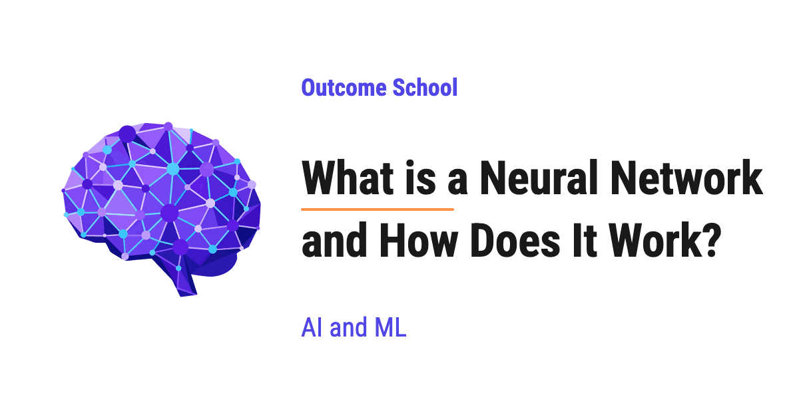
A Neural Network is a model made of many small units called neurons, arranged in layers, that turn input numbers into a prediction. It learns by adjusting its numbers again and again until its predictions become close to the correct answers.
In this blog, we will learn about what a Neural Network is and how it works. We will also see what a single neuron does with its weights, bias, and activation function, how neurons are arranged into layers, how a forward pass turns numbers into a prediction with a small worked example, how the network learns from its mistakes using loss, gradient descent, and backpropagation, and where Neural Networks are used.
We will cover the following:
- What is a Neural Network?
- What is a neuron?
- Weights and bias
- Activation function
- Layers: input, hidden, and output
- Forward pass: a worked example
- How does a Neural Network learn?
- The training loop
- Where are Neural Networks used?
Let's get started.
What is a Neural Network?
A Neural Network is a model that takes some numbers as input, passes them through many small connected units called neurons, and gives a prediction as output.
The idea is inspired by the human brain, where billions of cells called neurons receive signals and pass signals forward. In a Neural Network, each neuron receives numbers, does a small calculation, and passes a number forward.
The best way to learn this is by taking an example.
Let's say we want to predict the test score of a student, out of 10. We know two things about the student:
- Hours studied: 2
- Hours slept: 3
We give these two numbers to a Neural Network, and it gives us one number back: the predicted test score.
So, a Neural Network does two things:
- It predicts: input numbers go in, a prediction comes out.
- It learns: at the start, its predictions are bad. We show it many students with their real scores, and every time it makes a mistake, it adjusts itself a little. After many such adjustments, its predictions become good.
To understand both, we must start with the smallest building block: the neuron.
What is a neuron?
A neuron is the smallest unit of a Neural Network. It does three things:
- It takes some numbers as input.
- It multiplies each input by a number called a weight, and adds them all up along with one more number called a bias.
- It passes this total through a function called an activation function and gives one number as output.
Let's see a single neuron as a diagram:
x1 = 2 x2 = 3
(studied) (slept)
│ │
↓ ↓
┌───────────────────┐ ┌───────────────────┐
│ x1 * w1 │ │ x2 * w2 │
│ 2 * 0.5 = 1.0 │ │ 3 * 0.25 = 0.75 │
└─────────┬─────────┘ └─────────┬─────────┘
│ │
└────────────┬────────────┘
↓
┌─────────────────────────────────────────────┐
│ weighted sum z = 1.0 + 0.75 + b │
│ bias b = 0.25 │
│ z = 2.0 │
└──────────────────────┬──────────────────────┘
↓
┌─────────────────────────────────────────────┐
│ activation: ReLU(2.0) = 2.0 │
└──────────────────────┬──────────────────────┘
↓
output = 2.0
Here, we can see that the neuron takes two inputs, multiplies each one by its own weight, adds the bias, and then passes the total through the activation function to get the output.
Now, let's understand each part one by one.
Weights and bias
A weight tells the neuron how important an input is.
- A big weight means the input matters a lot.
- A small weight means the input matters a little.
- A negative weight means the input pushes the output down.
Let's say hours studied matters more for the test score than hours slept. Then, the weight for hours studied will be bigger than the weight for hours slept.
The bias is one extra number that the neuron adds no matter what the inputs are. It lets the neuron shift its output up or down. For example, even a student who studied 0 hours can get some score, and the bias helps the neuron capture that.
The neuron multiplies each input by its weight, adds them all up, and then adds the bias. The total is called the weighted sum. We write it as below:
z = (w1 * x1) + (w2 * x2) + b
Here, x1 and x2 are the inputs, w1 and w2 are the weights, and b is the bias.
With our numbers, w1 = 0.5, w2 = 0.25, and b = 0.25, we get:
z = (0.5 * 2) + (0.25 * 3) + 0.25 = 1.0 + 0.75 + 0.25 = 2.0
Very important: We do not set the weights and the bias by hand. The network finds the right values on its own during learning. These numbers are called the parameters of the network. When we say a model has 7 billion parameters, it means it has 7 billion such weights and biases.
Activation function
After the weighted sum, the neuron passes the result through an activation function.
Now, the question is: why do we need it?
If a neuron only multiplies and adds, then stacking many neurons together still gives us only multiplying and adding. The whole network becomes one big straight-line formula, no matter how many neurons we use. A straight line cannot capture complex patterns like recognizing a face in a photo.
The activation function adds a small bend to the output. When we stack many neurons with these bends, the network can learn curved and complex patterns.
The most common activation function is ReLU (Rectified Linear Unit). Its rule is:
- If the number is positive, keep it as it is.
- If the number is negative, make it 0.
ReLU(z) = max(0, z)
In our neuron, the weighted sum is 2.0. So, the output of the neuron is ReLU(2.0) = 2.0. If the weighted sum were -0.5, the output would be ReLU(-0.5) = 0.
There are other activation functions too, such as Sigmoid and Tanh, but their job is the same.
This is how a single neuron works. Now, let's see how many neurons work together.
Layers: input, hidden, and output
One neuron alone can learn only simple patterns. So, we connect many neurons together and arrange them in layers.
There are three types of layers:
- Input layer: It holds the input numbers. It does no calculation. In our example, it holds hours studied and hours slept.
- Hidden layer: It sits between the input and the output. Its neurons find useful patterns in the inputs. We call it hidden because we see only the input and the final output, not its values. A network can have one or many hidden layers.
- Output layer: It gives the final prediction. In our example, it gives the predicted test score.
Let's see a small network with 2 inputs, 2 hidden neurons, and 1 output neuron as a diagram:
INPUT LAYER
┌───────────────────┐ ┌───────────────────┐
│ x1 = 2 (studied) │ │ x2 = 3 (slept) │
└─────────┬─────────┘ └─────────┬─────────┘
│ │
└────────────┬────────────┘
│
┌────────────┴────────────┐
↓ ↓
HIDDEN LAYER
┌───────────────────┐ ┌───────────────────┐
│ neuron h1 │ │ neuron h2 │
└─────────┬─────────┘ └─────────┬─────────┘
│ │
└────────────┬────────────┘
↓
OUTPUT LAYER
┌─────────────────────────────────────────────┐
│ neuron y (predicted test score) │
└─────────────────────────────────────────────┘
Here, we can see that both inputs go to both hidden neurons, and both hidden neurons go to the output neuron. Each connection has its own weight. So, this small network has 4 weights between the input layer and the hidden layer, and 2 weights between the hidden layer and the output layer.
When every neuron in one layer is connected to every neuron in the next layer, we call it a fully connected layer.
When a network has many hidden layers, we call it a Deep Neural Network, and learning with such networks is called Deep Learning.
Forward pass: a worked example
The forward pass is the process of moving the input numbers through the network, layer by layer, from the input layer to the output layer, to get a prediction.
Let's do a complete forward pass on our small network with the same inputs, x1 = 2 (hours studied) and x2 = 3 (hours slept).
The weights and biases are given below. For the sake of understanding, we have picked simple numbers. In a real network, they start as small random numbers.
- Hidden neuron h1: weights 0.5 and 0.25, bias 0.25
- Hidden neuron h2: weights -1.0 and 0.5, bias 0
- Output neuron y: weights 1.5 (from h1) and 2.0 (from h2), bias 0.5
Step 1: We calculate the hidden neuron h1.
z1 = (0.5 * 2) + (0.25 * 3) + 0.25 = 1.0 + 0.75 + 0.25 = 2.0
h1 = ReLU(2.0) = 2.0
Step 2: We calculate the hidden neuron h2.
z2 = (-1.0 * 2) + (0.5 * 3) + 0 = -2.0 + 1.5 + 0 = -0.5
h2 = ReLU(-0.5) = 0
Here, we can see ReLU in action. The weighted sum was negative, so ReLU turned it into 0.
Step 3: We calculate the output neuron y. It takes h1 and h2 as its inputs.
y = (1.5 * 2.0) + (2.0 * 0) + 0.5 = 3.0 + 0 + 0.5 = 3.5
Here, we do not use ReLU in the output neuron, because we want the raw number as the predicted score. So, the network predicts a test score of 3.5.
This is how the forward pass works: multiply, add, activate, and pass forward, layer by layer.
Real networks have thousands to billions of weights, so they do all these multiplications together using matrices, but the core idea stays the same.
How does a Neural Network learn?
Now, the next big question is: how does the network fix its mistakes?
Let's say the real score of our student was 5, but our network predicted 3.5. The network learns from this mistake using three ideas:
- Loss: measures how wrong the prediction is.
- Gradient descent: adjusts each weight and bias a little in the direction that reduces the loss.
- Backpropagation: finds that direction for every weight and bias in the network.
Let's understand each of them.
Loss
The loss is a single number that tells how wrong the prediction is. A big loss means a big mistake. A loss of 0 means a perfect prediction.
One common way to calculate the loss is to take the difference between the correct answer and the prediction, and square it. This is called the squared error.
loss = (target - prediction)^2
In our example:
loss = (5 - 3.5)^2 = 1.5^2 = 2.25
We square the difference so that the loss is always positive, and bigger mistakes get a much bigger loss.
We have a detailed blog on L1 and L2 Loss Functions that explains the squared error and other loss functions in depth.
The goal of learning is to change the weights and biases so that the loss becomes as small as possible.
Gradient descent
Now, the question is: which way should we change each weight? Should we increase it or decrease it? And by how much?
Let's say we are standing on a hill in thick fog, and we want to reach the lowest point of the valley. We cannot see the valley, but we can feel the slope of the ground under our feet. So, we take a small step downhill, feel the slope again, and take another small step. Step by step, we reach the bottom.
This is exactly what gradient descent does.
- The height of the hill is the loss.
- Our position on the hill is the current values of the weights and biases.
- The slope under our feet is called the gradient. It tells us, for each weight, whether increasing it will increase or decrease the loss, and how strongly.
So, for every weight, we move it a small step in the direction that reduces the loss:
new weight = old weight - learning rate * gradient
The learning rate is a small number, like 0.01, that controls the size of each step. If the step is too big, we can jump over the bottom of the valley. If the step is too small, learning becomes very slow.
Backpropagation
Now, the next question is: how do we find the gradient for every weight, especially the weights deep inside the hidden layers?
Here comes the backpropagation into the picture.
Backpropagation is the method to find the gradient of every weight and bias by moving backward through the network, from the output layer to the input layer.
The idea is to start from the mistake at the output and move backward, layer by layer, to find how much each weight contributed to that mistake.
- First, we look at the output. The prediction 3.5 was too low by 1.5. So, the output needs to go up.
- Then, we check which weights of the output neuron caused this. The weight from h1 was multiplied by h1 = 2.0, so it had a big effect. The weight from h2 was multiplied by h2 = 0, so it had no effect on this prediction.
- After that, we move one layer back to h1. Since h1 feeds the output through a positive weight of 1.5, a bigger h1 gives a bigger prediction. So, the weights and the bias going into h1 must also increase.
- Finally, h2 was 0 because of ReLU, so it did not take part in this prediction. Its weights did not contribute to this mistake, so they do not change this time.
Let's see the numbers. For the output weight from h1, backpropagation gives a gradient of -6. The minus sign means that increasing this weight reduces the loss. With a learning rate of 0.01, gradient descent updates it as below:
new weight = 1.5 - 0.01 * (-6) = 1.5 + 0.06 = 1.56
Doing the same for every weight and bias, one round changes the values like below:
- Output weight from h1: 1.5 becomes 1.56
- Output bias: 0.5 becomes 0.53
- Weights going into h1: 0.5 becomes 0.59, and 0.25 becomes 0.385
- Bias of h1: 0.25 becomes 0.295
- Everything connected to h2: no change, because h2 was 0
Now, let's do the forward pass again with these new values:
h1 = ReLU((0.59 * 2) + (0.385 * 3) + 0.295) = ReLU(1.18 + 1.155 + 0.295) = 2.63
y = (1.56 * 2.63) + (2.0 * 0) + 0.53 = 4.1028 + 0.53 = 4.6328
loss = (5 - 4.6328)^2 = 0.1348 (rounded)
The prediction moved from 3.5 to about 4.63, and the loss dropped from 2.25 to about 0.13, in just one round. The network has learned a little.
Backpropagation uses the chain rule from calculus to do this calculation exactly for every weight. In practice, libraries like PyTorch calculate all the gradients for us automatically.
The training loop
Learning does not happen in one round. The network repeats the same steps again and again. This repetition is called the training loop.
Let's see the training loop as a diagram:
┌──────────────────────────────────────┐
│ Step 1: Forward pass │
│ inputs 2 and 3 give prediction 3.5 │
└──────────────────┬───────────────────┘
↓
┌──────────────────────────────────────┐
│ Step 2: Calculate the loss │
│ (5 - 3.5)^2 = 2.25 │
└──────────────────┬───────────────────┘
↓
┌──────────────────────────────────────┐
│ Step 3: Backpropagation │
│ find the gradient of every weight │
└──────────────────┬───────────────────┘
↓
┌──────────────────────────────────────┐
│ Step 4: Gradient descent │
│ update every weight by a small step │
└──────────────────┬───────────────────┘
↓
repeat from Step 1
Here, we can see that each round does a forward pass, measures the loss, finds the gradients by moving backward, and updates the weights. Then, the loop starts again with the updated weights.
If we keep repeating these steps on our single student, the loss goes down like below (numbers rounded):
| Round | Prediction | Loss |
|---|---|---|
| 1 | 3.5 | 2.25 |
| 2 | 4.6328 | 0.1348 |
| 3 | 4.9443 | 0.0031 |
| 4 | 4.9931 | 0.00005 |
Here, we can see that the prediction gets closer to the real score of 5 in every round.
In real training, we use thousands or millions of examples, not one student, and we repeat this loop over all of them many times. This way, the network learns weights that work well for all students.
This is how a Neural Network learns.
Where are Neural Networks used?
Neural Networks are used almost everywhere in modern AI. A few examples:
- Image recognition: finding faces in photos, reading handwritten digits, and detecting objects in self-driving cars.
- Speech: converting our voice into text.
- Language: ChatGPT, Claude, and Gemini are based on LLMs (Large Language Models), which are very large Neural Networks that predict the next token.
- Recommendations: suggesting videos, songs, and products based on what we liked before.
- Healthcare: finding signs of disease in medical scans.
All of these use the same core idea that we learned in this blog: neurons with weights and biases, arranged in layers, making predictions with a forward pass, and learning with loss, backpropagation, and gradient descent. The main differences are the size of the network, the way the layers are arranged, and the data it learns from.
Now we must have understood what a Neural Network is, how it works, and where it is used.
Frequently Asked Questions
Is a Neural Network the same as the human brain?
No. A Neural Network is only inspired by the human brain. In the brain, billions of cells called neurons receive signals and pass signals forward. In a Neural Network, each neuron is a small calculation: it receives numbers, multiplies them by weights, adds a bias, applies an activation function, and passes one number forward.
What is the difference between a Neural Network and Deep Learning?
A Deep Neural Network is a Neural Network with many hidden layers, and learning with such networks is called Deep Learning. So, Deep Learning uses the same building blocks: neurons with weights and biases, arranged in layers, just with many hidden layers between the input and the output.
What does it mean when a model has 7 billion parameters?
It means the model has 7 billion weights and biases. These numbers are called the parameters of the network. We do not set them by hand. The network finds the right values on its own during learning, by adjusting them again and again until its predictions become close to the correct answers.
What is the learning rate in a Neural Network?
The learning rate is a small number, like 0.01, that controls the size of each step when gradient descent updates a weight. If the step is too big, the network can jump over the lowest point of the loss. If the step is too small, learning becomes very slow.
Is an LLM a Neural Network?
Yes. LLMs (Large Language Models) like the ones behind ChatGPT, Claude, and Gemini are very large Neural Networks that predict the next token. They use the same core idea of neurons with weights and biases arranged in layers. The main differences are the size of the network, the way the layers are arranged, and the data it learns from.
Lesson 2.2
What is Bias In Artificial Neural Network?
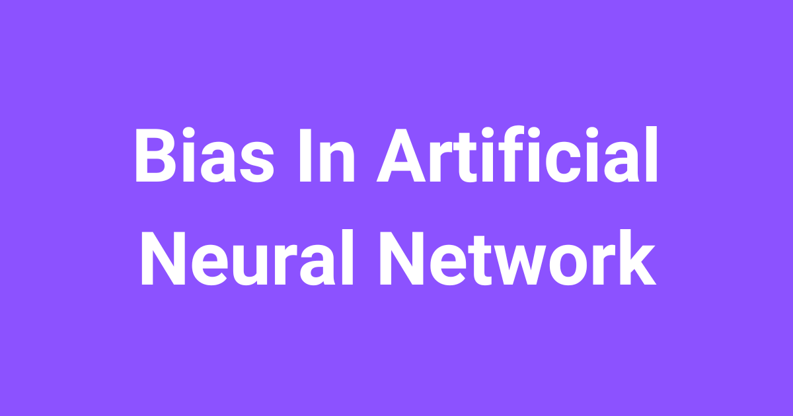
Bias in an Artificial Neural Network is the constant c in the model y = mx + c. Without bias, the line must pass through the origin. With bias, the model can shift the line and fit the data better.
In this blog, we will learn what is Bias In Artificial Neural Network.
Let's get started.
Understanding bias in simple words
Bias is one of the important terminologies in machine learning. Often we add bias while creating any model in the artificial neural network.
So, let's understand what is this mysterious bias.
In the neural network, we are given the input(x) and for that input, we need to predict the output(y). Here, we create a model(mx + c), which predicts the output.
While training, the model itself finds the appropriate value of the constants mand c.
Let's say we have the model as y = mx instead of the y = mx + c.
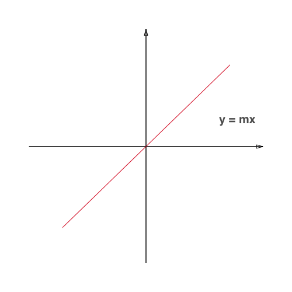
Here, the model is having constraint to train itself and find a line which passes only through the origin.
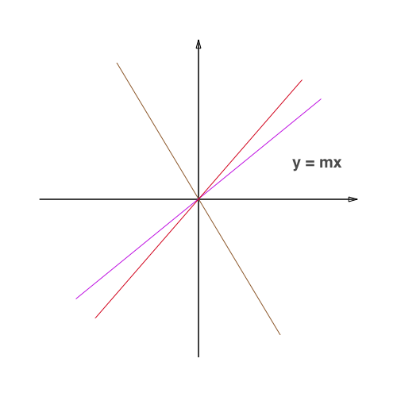
Many times for the given data, it is impossible for the algorithm to fit the model so that it passes through the origin.
Who doesn't need the freedom to perform well?
Let's give some freedom to the algorithm by changing the model as mx + c instead of mx, so that the model can find a line which fits the given data.
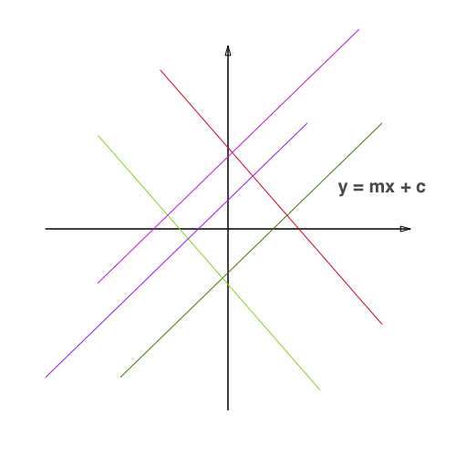
Now, it is having the full freedom to train itself and find a model that fits the best for the given data.
Here, the constant c is the bias.
Bias is a constant which helps the model in a way that it can fit best for the given data.
In other words, Bias is a constant which gives freedom to perform best. This is Bias.
Frequently Asked Questions
What happens if a neural network model has no bias?
Without bias, the model is y = mx, so it is forced to find a line that passes only through the origin. Many times, for the given data, it is impossible to fit such a line. Adding the bias gives the model the freedom to fit the data well.
Who decides the value of the bias in a neural network?
The model itself decides it. While training, the model finds the appropriate values of the constants m and c on its own. Here, the constant c is the bias.
Why is bias described as giving freedom to the model?
Bias removes the constraint that the line must pass through the origin. With the model mx + c instead of mx, the model has full freedom to train itself and find the line that fits best for the given data. So, bias is a constant that gives the model freedom to perform best.
Lesson 2.3
How Does Matrix Multiplication Work in Neural Networks?
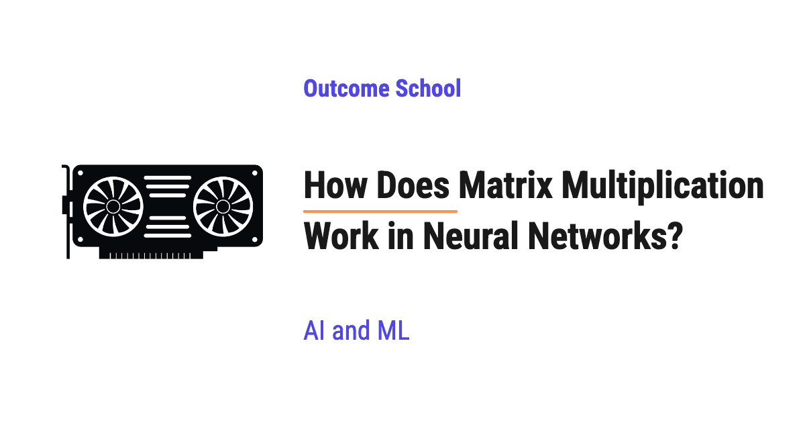
Matrix multiplication in neural networks is the operation that takes the input numbers, multiplies them with the weights of all the neurons in a layer, and adds up the results, all in one step. Most of the work a neural network does is this one operation, repeated layer after layer.
In this blog, we will learn about how matrix multiplication works in neural networks. We will also see what vectors, matrices, and the dot product are, the row-times-column rule with a fully worked example, the shape rule that tells us which matrices can be multiplied, how one layer of neurons becomes one matrix multiplication plus a bias, how we process many inputs at once, and why GPUs are so good at this.
We will cover the following:
- What are Vectors and Matrices?
- What is a Dot Product?
- How does Matrix Multiplication Work?
- The Shape Rule
- One Layer of Neurons is One Matrix Multiplication
- Processing Many Inputs at Once
- Why is the GPU Perfect for Matrix Multiplication?
Let's get started.
What are Vectors and Matrices?
A neural network does not understand pictures, words, or sounds directly. It understands only numbers. So, before anything goes into a neural network, we turn it into a list of numbers.
A vector is a list of numbers written in a fixed order.
For example, we can describe a house with 3 numbers: the number of bedrooms, the number of bathrooms, and the number of floors.
[3, 2, 1]
This is a vector with 3 numbers in it. The order matters. The first number is always bedrooms, the second is always bathrooms, and the third is always floors.
A matrix is a table of numbers arranged in rows and columns. We can think of it as many vectors stacked on top of each other. For example, 2 houses described with 3 numbers each give us a matrix like below:
[ 3 2 1 ] <- house 1
[ 4 3 2 ] <- house 2
This matrix has 2 rows and 3 columns. We call it a 2 x 3 matrix. We always say the number of rows first and the number of columns second. This "rows x columns" is the shape of the matrix.
What is a Dot Product?
Before jumping into matrix multiplication, we must know the dot product, because matrix multiplication is nothing but many dot products done together.
A dot product takes two vectors of the same length, multiplies the matching numbers, and adds all the results to get one single number.
Let's say we go to a shop and buy 2 pens, 3 notebooks, and 1 bag. A pen costs 10, a notebook costs 5, and a bag costs 20.
quantities = [2, 3, 1]
prices = [10, 5, 20]
To find the total bill, we multiply each quantity with its price and add them up:
total = 2 * 10 + 3 * 5 + 1 * 20 = 20 + 15 + 20 = 55
This is exactly a dot product. Two lists of 3 numbers go in, and one number, 55, comes out.
Now, let's see why this is important for neural networks. A single neuron does exactly this. It takes the input numbers, multiplies each one with its own weight, and adds them up. A weight is a number that tells the neuron how important each input is. In the shop example, the prices play the role of the weights.
So, one neuron = one dot product.
How does Matrix Multiplication Work?
Now that we have learned about the dot product, it's time to learn about matrix multiplication.
When we multiply matrix A with matrix B, every number in the answer is one dot product: one row of A with one column of B. This is called the row-times-column rule.
The best way to learn this is by taking an example.
Let's take matrix A of shape 2 x 3 and matrix B of shape 3 x 2:
A = [ 1 2 3 ] B = [ 7 8 ]
[ 4 5 6 ] [ 9 10 ]
[ 11 12 ]
The answer C will have 2 rows (the rows of A) and 2 columns (the columns of B). So, C is a 2 x 2 matrix, and we need to find 4 numbers.
Step 1: We find the number at row 1, column 1. We take row 1 of A, which is [1, 2, 3], and column 1 of B, which is [7, 9, 11].
1 * 7 + 2 * 9 + 3 * 11 = 7 + 18 + 33 = 58
Step 2: We find the number at row 1, column 2. We take row 1 of A, [1, 2, 3], and column 2 of B, [8, 10, 12].
1 * 8 + 2 * 10 + 3 * 12 = 8 + 20 + 36 = 64
Step 3: We find the number at row 2, column 1. We take row 2 of A, [4, 5, 6], and column 1 of B, [7, 9, 11].
4 * 7 + 5 * 9 + 6 * 11 = 28 + 45 + 66 = 139
Step 4: We find the number at row 2, column 2. We take row 2 of A, [4, 5, 6], and column 2 of B, [8, 10, 12].
4 * 8 + 5 * 10 + 6 * 12 = 32 + 50 + 72 = 154
Let's see Step 1 as a diagram, because every step follows the same path:
┌──────────────────────────────────────┐
│ row 1 of A = [1, 2, 3] │
│ column 1 of B = [7, 9, 11] │
└──────────────────────────────────────┘
↓
┌──────────────────────────────────────┐
│ multiply the matching numbers │
│ 1*7 = 7, 2*9 = 18, 3*11 = 33 │
└──────────────────────────────────────┘
↓
┌──────────────────────────────────────┐
│ add them up │
│ 7 + 18 + 33 = 58 │
└──────────────────────────────────────┘
↓
┌──────────────────────────────────────┐
│ C at row 1, column 1 = 58 │
└──────────────────────────────────────┘
Here, we can see that one row and one column go in, and exactly one number comes out. Steps 2, 3, and 4 use a different row or column, but the path is the same.
So, the final answer is:
C = [ 58 64 ]
[ 139 154 ]
Let's verify this with NumPy, a popular Python library for working with numbers. In NumPy, the @ symbol means matrix multiplication. We can write the code as below:
import numpy as np
A = np.array([[1, 2, 3],
[4, 5, 6]])
B = np.array([[7, 8],
[9, 10],
[11, 12]])
C = A @ B
print(C)
print(C.shape)
This will print the following:
[[ 58 64]
[139 154]]
(2, 2)
Here, we can see that NumPy gives the same 4 numbers that we calculated by hand, and the shape of the answer is 2 x 2.
This is how matrix multiplication works. It is a set of dot products, one for every row of A paired with every column of B.
The Shape Rule
In the example above, a row of A had 3 numbers and a column of B also had 3 numbers. That is why the dot product worked. If the lengths did not match, some numbers would have no partner to multiply with.
This gives us the shape rule:
(m x n) @ (n x p) = (m x p)
- The number of columns of A (n) must be the same as the number of rows of B (n). These are the two "inside" numbers.
- The answer takes its rows from A (m) and its columns from B (p). These are the two "outside" numbers.
In our example:
(2 x 3) @ (3 x 2) = (2 x 2)
The inside numbers are 3 and 3. They match, so the multiplication is allowed. The outside numbers, 2 and 2, give the shape of the answer.
Now, let's see what happens if the inside numbers do not match. Let's try to multiply a 2 x 3 matrix with another 2 x 3 matrix:
import numpy as np
A = np.ones((2, 3))
B = np.ones((2, 3))
C = A @ B
NumPy stops with an error:
ValueError: matmul: Input operand 1 has a mismatch in its core dimension 0, with gufunc signature (n?,k),(k,m?)->(n?,m?) (size 2 is different from 3)
Here, the last part of the error, "size 2 is different from 3", tells us that the inside numbers do not match. A row of A has 3 numbers, but a column of B has only 2 numbers, so the dot product cannot be done.
This shape mismatch error is one of the most common errors while building neural networks. Most of the time, we do mistakes in the shapes, and the shape rule is how we find and fix them.
One Layer of Neurons is One Matrix Multiplication
Now, let's connect everything to neural networks.
A layer in a neural network is a group of neurons that all look at the same input. Each neuron does the following:
- It takes a dot product of the input with its own weights.
- It adds its own extra number called the bias. The bias lets the neuron shift its output up or down, even when the inputs are zero.
After this, the neuron usually passes the result through an activation function, a small function that helps the network learn complex patterns. That part comes after the multiplication, so we will keep it aside in this blog.
Let's say our input has 3 numbers, and our layer has 2 neurons.
input x = [1, 2, 3]
neuron 1 weights = [2, 1, 0], bias = 1
neuron 2 weights = [0, 1, 3], bias = -2
If we compute each neuron one by one, we first take the dot product and then add the bias:
neuron 1 = (1 * 2 + 2 * 1 + 3 * 0) + 1 = 4 + 1 = 5
neuron 2 = (1 * 0 + 2 * 1 + 3 * 3) + (-2) = 11 - 2 = 9
Now, here comes the matrix multiplication into the picture. Instead of computing each neuron separately, we put the weights of each neuron as one column of a weight matrix W:
neuron 1 neuron 2
W = [ 2 0 ]
[ 1 1 ]
[ 0 3 ]
b = [ 1 -2 ]
W has 3 rows (one for each input number) and 2 columns (one for each neuron). So, W is a 3 x 2 matrix.
Now, the whole layer becomes one line:
output = x @ W + b
Here, we can think of x as a matrix with 1 row and 3 columns, so x is 1 x 3. The inside numbers are 3 and 3, so the multiplication is allowed.
Let's see the code for this:
import numpy as np
x = np.array([1, 2, 3])
W = np.array([[2, 0],
[1, 1],
[0, 3]])
b = np.array([1, -2])
print(x @ W + b)
This will print the following:
[5 9]
Here, we can see that we get the same 5 and 9 that we calculated neuron by neuron. The row of x meets column 1 of W to give neuron 1, and meets column 2 of W to give neuron 2.
Let's see the shapes flowing through this layer as a diagram:
┌──────────────────────────────────────┐
│ input x = [1, 2, 3] │
│ shape 1 x 3 │
└──────────────────────────────────────┘
↓
┌──────────────────────────────────────┐
│ x @ W │
│ (1 x 3) @ (3 x 2) = (1 x 2) │
│ result = [4, 11] │
└──────────────────────────────────────┘
↓
┌──────────────────────────────────────┐
│ add bias b = [1, -2] │
│ [4, 11] + [1, -2] = [5, 9] │
└──────────────────────────────────────┘
↓
┌──────────────────────────────────────┐
│ output = [5, 9] │
│ shape 1 x 2, one number per neuron │
└──────────────────────────────────────┘
Here, we can see that 3 numbers go in and 2 numbers come out, because the layer has 2 neurons. The bias does not change the shape. It only shifts each number.
A full layer of neurons is exactly one matrix multiplication plus a bias. A layer with 1,000 neurons is still one line of code. Only the shape of W changes.
We have a detailed blog on feed-forward networks in LLMs that explains how two such layers work inside every Transformer layer.
The shape of W tells us everything about the layer:
W shape = (number of inputs) x (number of neurons)
Note: Some libraries store W the other way round, as (number of neurons) x (number of inputs), and flip it (swap its rows and columns) before multiplying. The idea stays the same.
A deep neural network is many such layers, one after another. The output of one layer becomes the input of the next layer.
Processing Many Inputs at Once
In the example above, we passed only one input. But in practice, we pass many inputs together. We call a group of inputs processed together a batch.
Let's say we have 2 inputs instead of 1:
input 1 = [1, 2, 3]
input 2 = [4, 5, 6]
We could run the layer twice, once for each input. But there is a better way. We stack the inputs as rows of one matrix X:
X = [ 1 2 3 ] <- input 1
[ 4 5 6 ] <- input 2
Now, X is a 2 x 3 matrix, and we do one bigger multiplication:
(2 x 3) @ (3 x 2) = (2 x 2)
Each row of the answer is the output of the layer for one input. Let's see the code for this:
import numpy as np
X = np.array([[1, 2, 3],
[4, 5, 6]])
W = np.array([[2, 0],
[1, 1],
[0, 3]])
b = np.array([1, -2])
print(X @ W + b)
This will print the following:
[[ 5 9]
[14 21]]
Here, we can see that the first row, [5, 9], is the same answer we got for input 1 before. The second row, [14, 21], is the answer for input 2. Let's check it: (4 * 2 + 5 * 1 + 6 * 0) + 1 = 13 + 1 = 14, and (4 * 0 + 5 * 1 + 6 * 3) + (-2) = 23 - 2 = 21.
Notice that the bias b is a single row of 2 numbers, but the answer has 2 rows, one for each input. NumPy adds the same bias to every row automatically. This is called broadcasting.
We use the same W for every input. Only the number of rows in X changes. And one big multiplication is much faster than many small ones, because the hardware can work on all the rows together. We will see why in the next section.
Now, let's take a bigger example. We have a batch of 32 inputs, each with 784 numbers. The first layer has 128 neurons, so its weight matrix W1 is 784 x 128. The second layer has 10 neurons, and it receives 128 numbers from the first layer, so its weight matrix W2 is 128 x 10. Let's see the shapes flowing through both layers as a diagram:
┌──────────────────────────────────────────┐
│ batch X: 32 inputs, 784 numbers each │
│ shape 32 x 784 │
└──────────────────────────────────────────┘
↓
┌──────────────────────────────────────────┐
│ layer 1: W1 shape 784 x 128 │
│ (32 x 784) @ (784 x 128) = (32 x 128) │
└──────────────────────────────────────────┘
↓
┌──────────────────────────────────────────┐
│ layer 2: W2 shape 128 x 10 │
│ (32 x 128) @ (128 x 10) = (32 x 10) │
└──────────────────────────────────────────┘
↓
┌──────────────────────────────────────────┐
│ output: 32 rows, 10 numbers each │
│ shape 32 x 10 │
└──────────────────────────────────────────┘
Here, we can see that the number of rows stays 32 all the way down, because every row is one input. Only the number of columns changes, and it always becomes the number of neurons in that layer. We leave the bias out of this diagram, because it does not change the shape.
Why is the GPU Perfect for Matrix Multiplication?
Now, the next big question is: why do we need a GPU for this?
Let's count the work. When we multiply an (m x n) matrix with an (n x p) matrix, the answer has m * p numbers, and each of them is a dot product with n multiplications. So, we need m * n * p multiplications in total. For the first layer in the example above:
32 * 784 * 128 = 3,211,264 multiplications
That is more than 3 million multiplications for one layer and one small batch. Large models do billions of them for every single input.
Now, let's look back at our worked example. To find 58, we needed only row 1 of A and column 1 of B. To find 154, we needed only row 2 of A and column 2 of B. No number in the answer depends on any other number in the answer. So, all of them can be computed at the same time.
A chip does its calculations using cores. A core is one worker inside the chip that can do calculations on its own. A CPU has a small number of very powerful cores. It is great at doing a few complex tasks one after another.
A GPU has thousands of smaller, simpler cores. Each core can do a multiply and an add very quickly. Since every number in the answer is an independent dot product, the GPU gives different dot products to different cores, and they all run in parallel.
Let's say we have to check 10,000 exam answer sheets. One brilliant professor checking them one by one will take a long time. A thousand teachers, each checking 10 sheets at the same time, will finish much faster. The CPU is the brilliant professor, and the GPU is the thousand teachers.
Let's see this for our 2 x 2 example as a diagram:
┌─────────────────────────────────────────────┐
│ A @ B needs 4 dot products │
└─────────────────────────────────────────────┘
↓
┌─────────────────────────────────────────────┐
│ GPU: all 4 dot products at the same time │
│ │
│ ┌────────┐ ┌────────┐ ┌────────┐ ┌────────┐ │
│ │ core 1 │ │ core 2 │ │ core 3 │ │ core 4 │ │
│ │ 58 │ │ 64 │ │ 139 │ │ 154 │ │
│ └────────┘ └────────┘ └────────┘ └────────┘ │
└─────────────────────────────────────────────┘
↓
┌─────────────────────────────────────────────┐
│ C = [[58, 64], [139, 154]] │
└─────────────────────────────────────────────┘
Here, we can see that each core computes one number of C, and no core waits for another core. In a real GPU, thousands of cores do this together for much bigger matrices.
Modern GPUs also have special units built only for matrix multiplication. This is why neural networks are trained and run on GPUs.
We have a detailed blog on how a GPU works for deep learning that explains this step by step.
Now we must have understood how matrix multiplication works in neural networks, from a single dot product to a full batch of inputs running through many layers on a GPU.
Frequently Asked Questions
What does the @ symbol mean in NumPy?
The @ symbol means matrix multiplication in NumPy. When we write A @ B, NumPy takes the dot product of every row of A with every column of B and gives us the answer matrix. If the inside numbers of the two shapes do not match, NumPy stops with a shape mismatch error.
What is the shape of the weight matrix of a layer?
The weight matrix W of a layer has the shape (number of inputs) x (number of neurons). Each column of W holds the weights of one neuron. Some libraries store W the other way round, as (number of neurons) x (number of inputs), and flip it before multiplying, but the idea stays the same.
How many multiplications does a matrix multiplication need?
Multiplying an (m x n) matrix with an (n x p) matrix needs m * n * p multiplications. The answer has m * p numbers, and each of them is a dot product with n multiplications. For a batch of 32 inputs with 784 numbers each going into a layer of 128 neurons, that is 3,211,264 multiplications.
Is the activation function part of the matrix multiplication?
No. The activation function is not part of the matrix multiplication. A layer first does the matrix multiplication and adds the bias, and then the neuron usually passes the result through an activation function, a small function that helps the network learn complex patterns.
Lesson 2.4
How Does Gradient Descent Work?
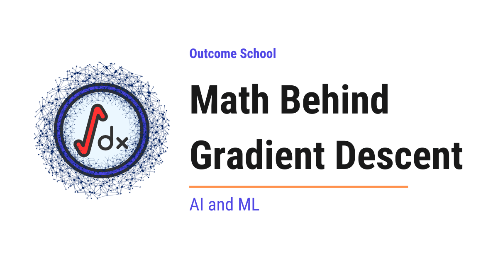
Gradient Descent is the optimization algorithm used to train machine learning models. It reduces the loss by moving the model's weights, step by step, in the direction where the loss goes down the fastest.
In this blog, we will learn about the math behind gradient descent with a step-by-step numeric example.
Gradient descent is the most fundamental optimization algorithm used to train machine learning and deep learning models. Understanding the math behind it gives us a clear picture of how models actually learn. Do not worry, we will go through each concept step by step so that everything is easy to understand.
We will cover the following topics:
- What is a Loss Function?
- What is Gradient Descent?
- The Intuition Behind Gradient Descent
- The Math Behind Gradient Descent
- Step-by-Step Numeric Example
- Gradient Descent with Multiple Parameters
- The Role of Learning Rate
- Types of Gradient Descent
- Gradient Descent in Python
Let's get started.
The Big Picture
Before we go into the details, let's understand the big picture.
A model learns by adjusting its weights so that its predictions become closer to the actual values. Gradient descent is the algorithm that tells the model how to adjust these weights. It keeps nudging the weights in the direction that reduces the error, step by step, until the error is as small as possible.
In simple words:
Gradient Descent = A simple way to slide down the error curve step by step until we reach the lowest point.
What is a Loss Function?
Before we learn about gradient descent, we must first understand what a loss function is.
A loss function is a function that measures how far the model's prediction is from the actual value. In simple words, it tells us how wrong the model is.
Let's say we are building a model that predicts house prices. The actual price of a house is 60 and our model predicts 50. The error is 60 - 50 = 10. One common way to measure this error is to square it. So, the loss becomes (60 - 50)² = 100.
We square the error for two reasons. First, squaring makes all errors positive so that negative and positive errors do not cancel each other out. Second, squaring penalizes larger errors more than smaller ones.
When we have many examples, we average these squared errors across the dataset. This is called Mean Squared Error (MSE), and it is one of the most common loss functions in machine learning.
Our goal during training is to make this loss as small as possible. And this is where gradient descent comes into the picture.
What is Gradient Descent?
Let's break down the term: Gradient Descent = Gradient + Descent.
- Gradient means the slope or steepness of a surface in a particular direction.
- Descent means going downward.
So, Gradient Descent means going downward in the direction of the steepest slope.
In simple words, gradient descent is an optimization algorithm that finds the values of weights that minimize the loss function. It does this by repeatedly adjusting the weights in the direction that reduces the loss.
The Intuition Behind Gradient Descent
The best way to learn this is by taking an example.
Suppose we are standing on a hill and it is completely foggy. We cannot see the bottom of the valley. The only thing we can feel is the slope of the ground under our feet. Our goal is to reach the bottom of the valley (the lowest point).
So, what would we do? We would feel the slope and take a step in the direction where the ground goes down. If the slope is steep, we take a bigger step. If the slope is gentle, we take a smaller step. We keep repeating this until the ground feels flat, which means we have reached the bottom.
This is exactly what gradient descent does. The hill is the loss function. The bottom of the valley is the minimum loss. The slope we feel is the gradient. And each step we take is a weight update.
The Math Behind Gradient Descent
Now, let's understand the actual math behind gradient descent. We will keep it simple and go step by step.
What is a Derivative?
A derivative tells us the rate of change of a function. In simple words, it tells us the slope of the function at a given point.
Let's say we are driving a car. The speedometer tells us how fast our position is changing with time. That speed is the derivative of our position with respect to time.
Similarly, in gradient descent, we need to know the slope of the loss function at the current weight value. The derivative tells us exactly that.
For a function f(w), the derivative is written as below:
f'(w) = df(w)/dw
Here, f'(w) tells us how much the output of f changes when we change w by a tiny amount.
- If the derivative is positive, the function is going up (slope is upward).
- If the derivative is negative, the function is going down (slope is downward).
- If the derivative is zero, the function is flat (we are at a minimum or maximum).
The Update Rule
Now that we know what the derivative (gradient) tells us, we can define how to update the weight. The update rule of gradient descent is as below:
w_new = w_old - α * f'(w_old)
Here:
w_oldis the current value of the weightw_newis the updated value of the weightα(alpha) is the learning rate, a small positive number that controls the step sizef'(w_old)is the gradient (derivative) at the current weight
Now, the question is: why do we subtract the gradient?
Because we want to go downhill (reduce the loss). If the gradient is positive (slope going up), subtracting it moves us to the left (downhill). If the gradient is negative (slope going down), subtracting a negative number means adding, so we move to the right (also downhill). This way, no matter which side of the minimum we are on, we always move toward the minimum.
This is the beauty of the minus sign in the update rule.
Step-by-Step Numeric Example
The best way to understand this is by taking a concrete example with actual numbers.
Let's say our loss function is:
f(w) = (w - 3)²
Here, the minimum of this function is at w = 3 because (3 - 3)² = 0. But let's assume the model does not know this. It starts with an initial guess and uses gradient descent to find the minimum.
The derivative of f(w) = (w - 3)² is:
f'(w) = 2 * (w - 3)
Now, let's start with w = 0 and a learning rate α = 0.1, and apply the update rule step by step.
| Step | w (before) | Gradient: 2(w - 3) | New w: w - 0.1 * gradient |
|---|---|---|---|
| 1 | 0 | 2(0 - 3) = -6 | 0 - 0.1 * (-6) = 0.6 |
| 2 | 0.6 | 2(0.6 - 3) = -4.8 | 0.6 - 0.1 * (-4.8) = 1.08 |
| 3 | 1.08 | 2(1.08 - 3) = -3.84 | 1.08 - 0.1 * (-3.84) = 1.464 |
| 4 | 1.464 | 2(1.464 - 3) = -3.072 | 1.464 - 0.1 * (-3.072) = 1.7712 |
| 5 | 1.7712 | 2(1.7712 - 3) = -2.4576 | 1.7712 - 0.1 * (-2.4576) = 2.0170 |
Here, we can see that w is getting closer and closer to 3 with each step. The gradient is also getting smaller with each step, which means the steps are getting smaller as we approach the minimum. This is exactly how gradient descent converges to the minimum.
Gradient Descent with Multiple Parameters
In the example above, we had only one weight w. But in a real neural network, we have millions of weights. So, how does gradient descent handle multiple weights?
Let's say we have two weights w1 and w2, and our loss function is L(w1, w2). We need to find how the loss changes with respect to each weight separately. This is called a partial derivative.
Think of it this way. Suppose we are adjusting a TV. The TV has two knobs - one for volume and one for brightness. To understand the effect of each knob, we turn one knob at a time while keeping the other fixed. That is exactly what a partial derivative does.
The partial derivative of L with respect to w1 is written as below:
∂L/∂w1
Here, the symbol ∂ is just a fancy way of writing "derivative with respect to one variable while keeping everything else fixed."
The gradient is the collection of all partial derivatives. For two weights, the gradient is:
gradient = [∂L/∂w1, ∂L/∂w2]
And the update rule for each weight becomes:
w1_new = w1_old - α * ∂L/∂w1
w2_new = w2_old - α * ∂L/∂w2
Each weight gets updated independently using its own partial derivative. This is how gradient descent scales to millions or even billions of parameters in a neural network.
The Role of Learning Rate
The learning rate (α) controls how big each step is during gradient descent. Choosing the right learning rate is very important. Let's see what happens with different learning rates using our same function f(w) = (w - 3)² starting from w = 0.
Learning rate too small (α = 0.01):
Step 1: gradient = 2(0 - 3) = -6, new w = 0 - 0.01 * (-6) = 0.06
Step 2: gradient = 2(0.06 - 3) = -5.88, new w = 0.06 - 0.01 * (-5.88) = 0.1188
Here, we can see that w is barely moving. In fact, after 20 steps at α = 0.01, w is only around 0.997, still nowhere near 3. Compare this with α = 0.1, which reached around 2.02 in just 4 steps. Training with a tiny learning rate will be extremely slow.
Learning rate just right (α = 0.1):
As we saw in our numeric example above, w moves steadily toward 3. This is the ideal case.
Learning rate too large (α = 1.5):
Step 1: gradient = 2(0 - 3) = -6, new w = 0 - 1.5 * (-6) = 9
Step 2: gradient = 2(9 - 3) = 12, new w = 9 - 1.5 * 12 = -9
Here, w jumped from 0 to 9 (overshooting past 3), and then from 9 to -9 (even farther away). The value is diverging instead of converging. This means the learning rate is too large and gradient descent will never find the minimum.
So, the learning rate must be chosen carefully. If it is too small, training is slow. If it is too large, training becomes unstable. In practice, values like 0.001 or 0.01 are commonly used as a starting point. For large models like Transformers, even smaller values like 1e-4 are common.
The same learning rate shows up when we take a pre-trained model and adapt it to our own data. We have a detailed blog on How does fine-tuning work? that shows this update loop in action.
Types of Gradient Descent
So far, we have worked with a simple function f(w) = (w - 3)² to learn the math. But in practice, the loss is computed over a training dataset. The dataset can be very large (millions of examples), and computing the gradient over all examples at once can be very slow. This is where different types of gradient descent come into the picture.
Batch Gradient Descent: This is what we have been discussing. It uses the entire training dataset to compute the gradient at each step. The gradient is accurate, but it is slow for large datasets.
Stochastic Gradient Descent (SGD): Instead of using the entire dataset, SGD uses only one randomly chosen data point to compute the gradient at each step. This makes each step much faster, but the gradient is noisy because it is based on just one example.
Note: In modern deep learning, the term "SGD" is often used loosely to mean mini-batch SGD. For example, torch.optim.SGD in PyTorch works with any batch size, not just one. The name stuck even though the batch size is usually greater than one in practice.
Mini-Batch Gradient Descent: This is the middle ground. It uses a small batch of data points (commonly 32, 64, or 128, and sometimes much larger for big models on modern GPUs) to compute the gradient. It is faster than batch gradient descent and less noisy than SGD.
Let me tabulate the differences for your better understanding:
| Type | Data Used Per Step | Speed | Gradient Accuracy |
|---|---|---|---|
| Batch Gradient Descent | Entire dataset | Slow | High |
| Stochastic Gradient Descent | 1 data point | Fast | Low (noisy) |
| Mini-Batch Gradient Descent | A batch (e.g., 32 to 1024) | Moderate | Moderate |
In practice, mini-batch gradient descent is the most commonly used approach because it provides a good balance between speed and accuracy.
Gradient Descent in Python
Now, let's see gradient descent in action with Python code. We will use the same function f(w) = (w - 3)² as below:
w = 0.0
learning_rate = 0.1
for step in range(50):
gradient = 2 * (w - 3)
w = w - learning_rate * gradient
loss = (w - 3) ** 2
print(f"Step {step + 1}: w = {w:.4f}, loss = {loss:.6f}")
Here, we start with w = 0.0 and a learning rate of 0.1. At each step, we compute the gradient, update the weight, and print the current value of w and the loss.
The final step prints:
Step 50: w = 3.0000, loss = 0.000000
After 50 steps, w is essentially 3 and the loss is essentially 0. The model has found the minimum.
This is how gradient descent works in code. In real deep learning frameworks like PyTorch and TensorFlow, the same principle is applied but the gradients are computed automatically using backpropagation. We have a detailed blog on Math Behind Backpropagation that explains how these gradients are actually computed step by step.
Putting It All Together
Let's recap what we have learned:
- The loss function measures how wrong the model's prediction is.
- Gradient descent is the algorithm that minimizes the loss by adjusting the weights.
- The gradient (derivative) tells us the direction and steepness of the slope.
- The update rule
w_new = w_old - α * gradientmoves the weight toward the minimum. - The learning rate controls how big each step is.
- In practice, mini-batch gradient descent is used for training large models.
This is how the math behind gradient descent works, and this is the foundation of how every neural network learns.
Frequently Asked Questions
Why do we subtract the gradient instead of adding it?
Because we want to go downhill and reduce the loss. If the gradient is positive, subtracting it moves the weight to the left, which is downhill. If the gradient is negative, subtracting it means adding, so the weight moves to the right, which is also downhill. Either way, we move toward the minimum.
What learning rate should we start with?
In practice, values like 0.001 or 0.01 are commonly used as a starting point. For large models like Transformers, even smaller values like 1e-4 are common. If the learning rate is too small, training is slow, and if it is too large, training becomes unstable.
Does SGD in PyTorch always use only one data point?
No. In modern deep learning, the term SGD is often used loosely to mean mini-batch SGD. For example, torch.optim.SGD in PyTorch works with any batch size, not just one. The name stuck even though the batch size is usually greater than one in practice.
Why do we square the error in Mean Squared Error?
We square the error for two reasons. First, squaring makes all errors positive, so negative and positive errors do not cancel each other out. Second, squaring penalizes larger errors more than smaller ones.
Do we compute gradients by hand in PyTorch and TensorFlow?
No. Frameworks like PyTorch and TensorFlow apply the same principle of gradient descent, but the gradients are computed automatically using backpropagation.
Lesson 2.5
How Does Backpropagation Work? The Math Explained Step by Step
Backpropagation is a method used to calculate how much each weight in a neural network contributed to the error, so that we can adjust those weights to reduce the error. It does this by sending the error backward through the network, using the chain rule.
In this blog, we will learn about the math behind backpropagation in neural networks.
Backpropagation is the core algorithm that allows neural networks to learn from their mistakes. Without it, training neural networks efficiently would not be possible. Understanding the math behind it gives us a deeper understanding of how neural networks actually learn. Do not worry, we will learn about each concept step by step so that everything is clear.
We will cover the following topics:
- What is backpropagation?
- The chain rule of calculus
- Forward pass
- Loss calculation
- Backward pass (backpropagation)
- Step-by-step numeric example
- Weight update using gradient descent
- Backpropagation in Python
Let's get started.
What is Backpropagation?
Backpropagation is a method used to calculate how much each weight in a neural network contributed to the error, so that we can adjust those weights to reduce the error.
In simple words, Backpropagation = Backward + Propagation. It means propagating (sending) the error backward through the network. Here, weights are the numbers that the network adjusts during training to make better predictions.
Let's say a student takes a math test and gets a wrong answer. The teacher does not just say "wrong" - the teacher goes back through each step to find exactly where the student made the mistake. That is what backpropagation does. It goes backward through each layer of the network to find how much each weight contributed to the error.
The Chain Rule of Calculus
Before we dive into backpropagation, we must understand the chain rule. Do not worry, we will keep it simple.
The chain rule is a formula from calculus that tells us how to find the rate of change of a value that depends on another value, which in turn depends on yet another value.
Let's say we have a chain of dependencies: the number of hours we study affects our knowledge, and our knowledge affects our exam score. If we want to know how study hours affect the exam score, we need to trace through the chain.
In mathematical terms, let's say we have three variables: x, y, and z.
- y depends on x: y = f(x)
- z depends on y: z = g(y)
Now, if we want to know how z changes when x changes, we use the chain rule as below:
dz/dx = (dz/dy) * (dy/dx)
Here, dz/dx means "how much does z change when x changes by a tiny amount?"
This is very important because in a neural network, the output depends on the activations of each layer, and each layer's activation depends on its own weights and the activations from the previous layer. The chain rule allows us to trace the error all the way back to each weight.
Forward Pass
In the forward pass, the input data flows through the network from the input layer to the output layer. At each neuron, we perform two operations:
Step 1: Weighted Sum
We multiply each input by its weight and add a bias. For a neuron with two inputs, this looks like below:
z = (w1 * x1) + (w2 * x2) + b
Here, w1 and w2 are weights, x1 and x2 are inputs, and b is the bias. The bias is an extra value that helps the neuron adjust its output even when the inputs are zero. If a neuron has only one input, the formula simplifies to z = w * x + b.
Step 2: Activation Function
We pass the weighted sum through an activation function. Let's use the sigmoid function for our example as below:
a = sigmoid(z) = 1 / (1 + e^(-z))
Here, e is Euler's number (approximately 2.71828). The sigmoid function always outputs a value between 0 and 1, which makes it useful for representing probabilities and keeping values in a manageable range.
The activation function introduces non-linearity, which allows the network to learn complex patterns (i.e. curves and non-linear relationships). Without it, no matter how many layers we stack, the network would only be able to learn simple straight-line relationships.
The output of one layer becomes the input to the next layer. This continues until we get the final output.
Loss Calculation
After the forward pass, we compare the predicted output with the actual expected output. The difference between them is called the loss (or error).
A common loss function is the Squared Error Loss:
Loss = (1/2) * (y_actual - y_predicted)^2
Here, we use (1/2) as a constant to make the math cleaner when we calculate the derivative (i.e. the rate of change). This only changes the scale of the gradients, not their direction, and the learning rate compensates for this. When we have multiple training examples, we average this loss over all examples, and that is called the Mean Squared Error (MSE). For our example, we have a single training example, so we will use this simpler form.
The goal of training is to minimize this loss. And to minimize it, we need to know how each weight affects the loss. This is exactly where backpropagation comes into the picture.
Backward Pass (Backpropagation)
Now, we need to find out: "How much does each weight contribute to the loss?" In mathematical terms, we need to calculate the gradient of the loss with respect to each weight.
In simple words, the gradient is like a slope. Suppose we are standing on a hill and we want to reach the lowest point. The gradient tells us which direction to walk (uphill or downhill) and how steep the slope is.
The gradient tells us: The direction in which we need to change the weight (increase or decrease).
We use the chain rule to calculate these gradients, going backward from the output layer to the input layer.
Setting Up a Simple Network
Let's take a very simple neural network with:
- 1 input neuron (x)
- 1 hidden neuron
- 1 output neuron
- Sigmoid activation function at the hidden and output neurons
The network looks like below:
Input (x) --[w1]--> Hidden (h) --[w2]--> Output (o)
Forward pass equations:
z_h = w1 * x + b1 (weighted sum at hidden neuron)
a_h = sigmoid(z_h) (activation at hidden neuron)
z_o = w2 * a_h + b2 (weighted sum at output neuron)
a_o = sigmoid(z_o) (activation at output neuron, this is our prediction)
Loss:
L = (1/2) * (y - a_o)^2
Here, y is the actual expected output and a_o is our predicted output.
Calculating Gradients
Now, we want to find dL/dw2 (how much the loss changes when w2 changes) and dL/dw1 (how much the loss changes when w1 changes).
Gradient for w2:
Using the chain rule:
dL/dw2 = (dL/da_o) * (da_o/dz_o) * (dz_o/dw2)
Let's calculate each part:
dL/da_o = -(y - a_o)
This tells us how the loss changes with respect to the predicted output.
da_o/dz_o = a_o * (1 - a_o)
This is the derivative (i.e. the rate of change) of the sigmoid function. Let's see how we get this result.
We know that a_o = sigmoid(z_o) = 1 / (1 + e^(-z_o)). We can rewrite this as (1 + e^(-z_o))^(-1).
Now, we apply the chain rule:
da_o/dz_o = -1 * (1 + e^(-z_o))^(-2) * (-e^(-z_o))
= e^(-z_o) / (1 + e^(-z_o))^2
Here, we can notice that:
1 - a_o = 1 - 1 / (1 + e^(-z_o))
= e^(-z_o) / (1 + e^(-z_o))
So, we can rewrite our derivative as below:
e^(-z_o) / (1 + e^(-z_o))^2 = [1 / (1 + e^(-z_o))] * [e^(-z_o) / (1 + e^(-z_o))]
= a_o * (1 - a_o)
The sigmoid function has this nice property where its derivative can be expressed using its own output. This is also very convenient because we already computed a_o during the forward pass, so we do not need to recalculate anything.
dz_o/dw2 = a_h
This is because z_o = w2 * a_h + b2, so the derivative with respect to w2 is simply a_h.
Putting it all together:
dL/dw2 = -(y - a_o) * a_o * (1 - a_o) * a_h
Gradient for w1:
For w1, the chain is longer because w1 is further from the output. But the principle is exactly the same - we just multiply more terms together. We need to go through more steps:
dL/dw1 = (dL/da_o) * (da_o/dz_o) * (dz_o/da_h) * (da_h/dz_h) * (dz_h/dw1)
We already know the first two terms. Let's calculate the new ones:
dz_o/da_h = w2
This is because z_o = w2 * a_h + b2, so the derivative with respect to a_h is w2.
da_h/dz_h = a_h * (1 - a_h)
This is again the derivative of the sigmoid function.
dz_h/dw1 = x
This is because z_h = w1 * x + b1, so the derivative with respect to w1 is x.
Putting it all together:
dL/dw1 = -(y - a_o) * a_o * (1 - a_o) * w2 * a_h * (1 - a_h) * x
Here, we can see that the gradient for w1 reuses the error signal dL/da_o * da_o/dz_o that we already computed for w2. This is the key insight of backpropagation - we reuse the error signals computed at later layers when computing gradients for earlier layers. This makes the computation very efficient because we do not have to calculate everything from scratch for each weight.
Gradients for biases:
We also need to calculate the gradients for the biases. The process is similar. For b2, since z_o = w2 * a_h + b2, the derivative of z_o with respect to b2 is simply 1. So:
dL/db2 = -(y - a_o) * a_o * (1 - a_o) * 1
Similarly, for b1, since z_h = w1 * x + b1, the derivative of z_h with respect to b1 is 1. So:
dL/db1 = -(y - a_o) * a_o * (1 - a_o) * w2 * a_h * (1 - a_h) * 1
Here, we can see that the bias gradients follow the same chain rule pattern as the weight gradients. The only difference is that the last term in the chain is 1 instead of the input value.
Step-by-Step Numeric Example
The best way to learn this is by taking an example. Let's initialize our network with the following values:
x = 0.5 (input)
y = 1.0 (expected output)
w1 = 0.3 (weight 1)
b1 = 0.1 (bias 1)
w2 = 0.7 (weight 2)
b2 = 0.2 (bias 2)
Forward Pass:
Step 1: Calculate the hidden neuron output.
z_h = w1 * x + b1 = 0.3 * 0.5 + 0.1 = 0.25
a_h = sigmoid(0.25) = 1 / (1 + e^(-0.25)) = 0.5622
Step 2: Calculate the output neuron output.
z_o = w2 * a_h + b2 = 0.7 * 0.5622 + 0.2 = 0.5935
a_o = sigmoid(0.5935) = 1 / (1 + e^(-0.5935)) = 0.6442
Here, our predicted output is 0.6442, but the expected output is 1.0.
Note: We are rounding intermediate values to 4 decimal places for clarity. The Python implementation later uses full precision, so you may notice slight differences in the final digits.
Step 3: Calculate the loss.
L = (1/2) * (1.0 - 0.6442)^2 = (1/2) * (0.3558)^2 = 0.0633
Backward Pass:
Now, let's calculate the gradients.
Step 4: Gradient for w2.
dL/da_o = -(1.0 - 0.6442) = -0.3558
da_o/dz_o = 0.6442 * (1 - 0.6442) = 0.6442 * 0.3558 = 0.2292
dz_o/dw2 = a_h = 0.5622
dL/dw2 = -0.3558 * 0.2292 * 0.5622 = -0.0459
Step 5: Gradient for w1.
dz_o/da_h = w2 = 0.7
da_h/dz_h = 0.5622 * (1 - 0.5622) = 0.5622 * 0.4378 = 0.2461
dz_h/dw1 = x = 0.5
dL/dw1 = -0.3558 * 0.2292 * 0.7 * 0.2461 * 0.5 = -0.0070
Now, we have the gradients. The negative sign tells us that we need to increase both weights to reduce the loss. Now, it's time to learn about how we use these gradients to update the weights.
Weight Update Using Gradient Descent
Once we have the gradients, we update the weights using the gradient descent formula:
w_new = w_old - learning_rate * (dL/dw)
Here, the learning rate is a small number (like 0.1 or 0.01) that controls how big each step is. If the learning rate is too large, we overshoot the optimal value. If it is too small, learning will be very slow.
Let's use a learning rate of 0.5:
w2_new = 0.7 - 0.5 * (-0.0459) = 0.7 + 0.0229 = 0.7229
w1_new = 0.3 - 0.5 * (-0.0070) = 0.3 + 0.0035 = 0.3035
Here, we can see that both weights increased slightly. If we run the forward pass again with these new weights, we will get a prediction closer to 1.0 and the loss will be smaller.
This process of forward pass, loss calculation, backward pass, and weight update is repeated many times during training. With each iteration, the network gets better at making predictions.
This same loop runs when we take an already trained model and adapt it to our own task. We have a detailed blog on How does fine-tuning work? that explains it end to end.
Now, we have understood the complete math. Till now, we have learned all the theory and verified it with a numeric example. Now, let's put it all together in a working Python implementation.
Backpropagation in Python
Now, let's implement the complete backpropagation example in Python as below:
import math
# Initialize
x = 0.5
y = 1.0
w1, b1 = 0.3, 0.1
w2, b2 = 0.7, 0.2
learning_rate = 0.5
def sigmoid(z):
return 1 / (1 + math.exp(-z))
# Training loop
for epoch in range(1000):
# Forward pass
z_h = w1 * x + b1
a_h = sigmoid(z_h)
z_o = w2 * a_h + b2
a_o = sigmoid(z_o)
# Loss
loss = 0.5 * (y - a_o) ** 2
# Backward pass
dL_da_o = -(y - a_o)
da_o_dz_o = a_o * (1 - a_o)
dz_o_dw2 = a_h
dz_o_da_h = w2
da_h_dz_h = a_h * (1 - a_h)
dz_h_dw1 = x
dL_dw2 = dL_da_o * da_o_dz_o * dz_o_dw2
dL_dw1 = dL_da_o * da_o_dz_o * dz_o_da_h * da_h_dz_h * dz_h_dw1
dL_db2 = dL_da_o * da_o_dz_o
dL_db1 = dL_da_o * da_o_dz_o * dz_o_da_h * da_h_dz_h
# Weight update
w2 = w2 - learning_rate * dL_dw2
w1 = w1 - learning_rate * dL_dw1
b2 = b2 - learning_rate * dL_db2
b1 = b1 - learning_rate * dL_db1
if epoch % 200 == 0:
print(f"Epoch {epoch}, Loss: {loss:.6f}, Prediction: {a_o:.6f}")
print(f"Final prediction: {a_o:.6f}")
Here, we have implemented the complete forward pass, backward pass, and weight update in a training loop. We run it for 1000 epochs (an epoch is one complete pass through the training data). Since we have a single training example, each iteration is one epoch. The loss decreases with each epoch, and the prediction gets closer and closer to the expected output of 1.0.
This will print the following:
Epoch 0, Loss: 0.063306, Prediction: 0.644173
Epoch 200, Loss: 0.001997, Prediction: 0.936796
Epoch 400, Loss: 0.000917, Prediction: 0.957166
Epoch 600, Loss: 0.000585, Prediction: 0.965799
Epoch 800, Loss: 0.000426, Prediction: 0.970806
Final prediction: 0.974146
Here, we can see how the loss decreases from 0.063306 to almost 0.000426 after 800 epochs, and the prediction moves from 0.644173 to 0.974146, which is very close to our expected output of 1.0.
This is how the math behind backpropagation works. The chain rule allows us to efficiently compute how much each weight contributes to the error. And gradient descent uses that information to update the weights in the right direction. Now, we have understood the complete math behind backpropagation and how neural networks learn from their mistakes.
Frequently Asked Questions
Is backpropagation the same as gradient descent?
No. Backpropagation uses the chain rule to compute how much each weight contributes to the error. Gradient descent then uses those gradients to update the weights in the right direction. The two work together in every training loop.
Why is backpropagation efficient?
Backpropagation reuses the error signals computed at later layers when it computes gradients for earlier layers. For example, the gradient for w1 reuses the error signal already computed for w2. So, we do not have to calculate everything from scratch for each weight.
Why does a neural network need an activation function?
The activation function introduces non-linearity, which allows the network to learn complex patterns like curves. Without it, no matter how many layers we stack, the network would only be able to learn simple straight-line relationships.
What happens if the learning rate is too large or too small?
If the learning rate is too large, we overshoot the optimal value. If it is too small, learning will be very slow. The learning rate is a small number that controls how big each step of the weight update is.
Why is there a 1/2 in the squared error loss?
The (1/2) is a constant that makes the math cleaner when we calculate the derivative. It only changes the scale of the gradients, not their direction, and the learning rate compensates for this.
Lesson 2.6
What is Cross-Entropy Loss?

Cross-Entropy Loss is a number that tells us how wrong our predicted probabilities are. It measures how different the model's predicted probabilities are from the true answer. The closer the prediction is to the truth, the smaller the loss.
In this blog, we will learn about the math behind Cross-Entropy Loss with a step-by-step numeric example.
When we train a classification model in machine learning, the model predicts probabilities for each class. For example, given an image, the model outputs something like: "I am 70% sure this is a cat, 20% sure it is a dog, and 10% sure it is a rabbit." To train the model, we need a way to measure how wrong these predictions are compared to the true answer. This is exactly what Cross-Entropy Loss does. It is the most widely used loss function in classification tasks, and it powers the training of almost every modern AI model, including GPT, BERT, and image classifiers.
When we hear Cross-Entropy Loss, it sounds complex. But do not worry. If we break it down into its individual parts, every single piece is simple. Our goal is to decode this so clearly that by the end, we will be able to explain how Cross-Entropy Loss works to anyone.
We will cover the following:
- The Big Picture
- What is Cross-Entropy?
- The Cross-Entropy Loss Formula
- Why We Take the Negative Log
- Binary Cross-Entropy Loss
- Categorical Cross-Entropy Loss
- Step-by-Step Numeric Example
- Cross-Entropy Loss for Language Models
- The Gradient of Cross-Entropy Loss
- Quick Summary
Let's get started.
The Big Picture
Before we go into the details, let's understand the big picture. Cross-Entropy Loss measures how different the predicted probability distribution is from the true probability distribution. If our prediction is close to the truth, the loss is small. If our prediction is far from the truth, the loss is large.
In simple words:
Cross-Entropy Loss = A number that tells us how wrong our predicted probabilities are.
The lower the cross-entropy, the better the model. During training, we keep updating the model weights to make this loss as small as possible. The algorithm that actually performs these weight updates is called gradient descent. We have a detailed blog on Math Behind Gradient Descent that explains how this works step by step.
What is Cross-Entropy?
The word Cross-Entropy comes from information theory. Let's decompose it:
Cross-Entropy = Cross + Entropy
- Entropy measures the uncertainty of a probability distribution. If a coin is perfectly fair (50% heads, 50% tails), the entropy is high because we are very unsure about the outcome. If a coin always lands heads (100% heads, 0% tails), the entropy is zero because there is no uncertainty.
- Cross means we are comparing two distributions: the true distribution (what should happen) and the predicted distribution (what our model thinks will happen).
So, Cross-Entropy measures the uncertainty we have when we use the predicted distribution to describe events that actually follow the true distribution. If the two distributions are identical, the cross-entropy is at its minimum. If they are very different, the cross-entropy is large.
The Weather Forecaster Analogy
The best way to learn this is by taking an example. Suppose we have a weather forecaster who every morning announces the chance of rain, sunshine, and snow as probabilities (e.g. "60% rain, 30% sunshine, 10% snow"). At the end of the day, exactly one of these actually happens.
Now, how do we score this forecaster fairly?
- If she says "90% rain" and it rains, she gets a very small penalty. Great forecast.
- If she says "90% sunshine" and it rains, she gets a huge penalty. She was confidently wrong.
- If she says "34% rain, 33% sunshine, 33% snow" (completely unsure) and it rains, she gets a moderate penalty. Hedging is neither punished heavily nor rewarded.
Cross-Entropy Loss is exactly this scoring system. The model is the forecaster, the softmax output is the probability announcement, and the true label is what actually happened. We will keep coming back to this analogy throughout the blog.
The Cross-Entropy Loss Formula
Before we write the formula, let's see the full pipeline of how cross-entropy loss is computed during training:
[raw scores] [probabilities] [loss]
(logits) --> (after softmax) --> (-log of correct class)
z = [2, 3, 1] p = [0.24, 0.66, 0.09] 0.4076
| | |
+-----> softmax ------+----> -log(p_dog) -----+
The raw scores (logits) come out of the final layer of the model. Softmax turns them into probabilities that sum to 1. Cross-Entropy Loss then looks at the probability of the correct class and takes its negative log.
The general formula for Cross-Entropy Loss is:
CE = - sum over all classes i of [ y_i * log(p_i) ]
Here:
y_iis the true label for classi(usually 1 for the correct class, 0 for all others)p_iis the predicted probability for classilogis the natural logarithm (basee)- The sum runs over all classes
Since y_i is 1 only for the correct class and 0 for all others, the formula simplifies to:
CE = - log(p_correct)
Where p_correct is the predicted probability for the correct class.
In simple words, cross-entropy loss is just the negative log of the probability that our model assigned to the correct answer.
Why We Take the Negative Log
Now, a natural question arises - why do we take the log, and why the negative sign?
Why should a forecaster who says "90% sunshine" on a rainy day be punished far more than one who says "60% sunshine"? Because confident mistakes are more dangerous than hedged mistakes. The log makes this punishment happen automatically.
Let's understand this step by step.
Why log?
Suppose our model predicts the correct class with probability 0.9. This is a great prediction. Now suppose another model predicts the correct class with probability 0.1. This is a terrible prediction. We want our loss to reflect this difference strongly.
If we just used 1 - p, the difference between 0.9 and 0.1 would be only 0.8. That does not feel strong enough. But if we use log(p):
log(0.9) = -0.105log(0.1) = -2.303
The log stretches out the small probabilities and punishes them much more harshly. Let's put this into perspective with real numbers:
-log(0.1) = 2.303-log(0.01) = 4.605-log(0.001) = 6.908
A prediction of 0.01 gets almost double the penalty of a prediction of 0.1, and a prediction of 0.001 gets three times the penalty. Every time the predicted probability shrinks by a factor of 10, the penalty goes up by a fixed amount (about 2.303).
Here is the deeper reason why log is the right tool:
1 - pis linear and capped at 1. Even a confidently wrong prediction ofp = 0.01gets a penalty of only0.99.-log(p)is unbounded as p approaches 0. A confidently wrong prediction ofp = 0.001gets a penalty of6.908, and the penalty keeps growing without limit aspgets smaller.
This is exactly what we want - the model should be strongly discouraged from being confidently wrong.
Why negative?
The log of any number between 0 and 1 is always negative. Since loss should be a positive number (lower is better), we put a negative sign in front to flip it. So:
p = 0.9->-log(0.9) = 0.105(small loss, good prediction)p = 0.1->-log(0.1) = 2.303(large loss, bad prediction)p = 1.0->-log(1.0) = 0(zero loss, perfect prediction)pclose to0->-log(p)close toinfinity(huge loss, the forecaster said "0% chance of rain" and it rained)
This is how cross-entropy gives a clean, well-behaved loss value that is small when we are right and large when we are wrong.
Binary Cross-Entropy Loss
Now, let's look at the simplest case - when we have only two classes (e.g. spam or not spam, cat or dog, rain or no rain). This is the exact setting of our forecaster analogy when she only predicts "rain" or "no rain".
In this case, the true label y is either 0 or 1, and the predicted probability p is a single number between 0 and 1 (usually the output of a sigmoid function).
The formula is:
BCE = - [ y * log(p) + (1 - y) * log(1 - p) ]
Here, only one of the two terms is active at a time:
- If
y = 1: only-log(p)is active. We wantpto be close to 1. - If
y = 0: only-log(1 - p)is active. We wantpto be close to 0.
Let's see with an example. Suppose the true label is y = 1 and the model predicts p = 0.8:
BCE = - [ 1 * log(0.8) + 0 * log(0.2) ]
= - log(0.8)
= 0.223
Now suppose the true label is y = 1 but the model predicts p = 0.2:
BCE = - [ 1 * log(0.2) + 0 * log(0.8) ]
= - log(0.2)
= 1.609
The second prediction is punished with a much larger loss. It works perfectly.
Categorical Cross-Entropy Loss
Now, let's move to the case with multiple classes (e.g. classifying an image as cat, dog, rabbit, or bird).
In this case, the true label is a one-hot vector. A one-hot vector is just a list of zeros with a single 1 at the position of the correct class. If we want to understand one-hot encoding in detail, we can watch this video on one-hot encoding. For example, if the true class is "dog" out of [cat, dog, rabbit, bird], the true label is:
y = [0, 1, 0, 0]
The model outputs a probability distribution over all classes, usually by applying a softmax function on top of the raw scores (also called logits). Let's say the model predicts:
p = [0.2, 0.7, 0.05, 0.05]
The categorical cross-entropy is:
CE = - sum [ y_i * log(p_i) ]
= - [ 0 * log(0.2) + 1 * log(0.7) + 0 * log(0.05) + 0 * log(0.05) ]
= - log(0.7)
= 0.357
Since the true label is one-hot, only the term for the correct class survives. So the formula reduces to - log(p_correct).
Step-by-Step Numeric Example
Let's put this into perspective with real numbers. Suppose we have a classification problem with 3 classes: cat, dog, rabbit. The true label is dog, so the one-hot true vector is:
y = [0, 1, 0]
Our model produces the following raw scores (logits) for an input image:
z = [2.0, 3.0, 1.0]
Step 1: Apply softmax to convert logits into probabilities.
The softmax formula is:
p_i = exp(z_i) / sum of exp(z_j) over all j
Let's compute each exponent:
exp(2.0) = 7.389exp(3.0) = 20.086exp(1.0) = 2.718
The sum is: 7.389 + 20.086 + 2.718 = 30.193
So the probabilities are:
p_cat = 7.389 / 30.193 = 0.2447p_dog = 20.086 / 30.193 = 0.6652p_rabbit = 2.718 / 30.193 = 0.0900
We are rounding intermediate values to 4 decimal places for clarity.
Step 2: Compute the cross-entropy loss.
Since the true class is dog, we only care about p_dog:
CE = - log(p_dog)
= - log(0.6652)
= 0.4076
So the cross-entropy loss for this prediction is approximately 0.4076. The model said "66% chance it's a dog" and it was a dog - a decent but not great forecast.
Step 3: Let's see what happens if the model is more confident.
Suppose the logits become:
z = [1.0, 5.0, 0.5]
exp(1.0) = 2.718exp(5.0) = 148.413exp(0.5) = 1.649
Sum: 2.718 + 148.413 + 1.649 = 152.780
p_cat = 2.718 / 152.780 = 0.0178p_dog = 148.413 / 152.780 = 0.9714p_rabbit = 1.649 / 152.780 = 0.0108
Now the loss is:
CE = - log(0.9714) = 0.0290
The loss dropped from 0.4076 to 0.0290. The more confident and correct the model is, the smaller the loss. This is the beauty of cross-entropy. Our forecaster just got better - she said "97% chance of what actually happened" and barely got penalized.
Step 4: Let's see what happens if the model is confidently wrong.
Suppose the logits are:
z = [5.0, 1.0, 0.5]
exp(5.0) = 148.413exp(1.0) = 2.718exp(0.5) = 1.649
Sum: 148.413 + 2.718 + 1.649 = 152.780
p_cat = 148.413 / 152.780 = 0.9714p_dog = 2.718 / 152.780 = 0.0178p_rabbit = 1.649 / 152.780 = 0.0108
The loss is:
CE = - log(0.0178) = 4.029
Here, the loss jumped from 0.4076 to a huge 4.029. The model was confidently predicting "cat" when the true answer was "dog", so cross-entropy punishes it heavily. This is exactly the behavior we want. Coming back to our forecaster analogy, this is the forecaster who said "97% sunshine" on a day it rained - a big penalty.
Note: In practice, deep learning frameworks like PyTorch and TensorFlow do not compute softmax and cross-entropy as two separate steps. They fuse them into a single numerically stable function (e.g. CrossEntropyLoss in PyTorch, softmax_cross_entropy_with_logits in TensorFlow). The reason is that computing exp(z) for large logits can overflow, and computing log on very small probabilities can underflow. The fused version applies the log-sum-exp trick to avoid both problems. So in real code, we pass the raw logits directly, not the softmax output.
Cross-Entropy Loss for Language Models
Now, let's take a real use-case in modern AI. In large language models like GPT, which are built on the Transformer architecture, the model predicts the next token from a vocabulary of tens of thousands of tokens (often 50,000+).
At each position in the sequence, the model outputs a probability distribution over the entire vocabulary. The true label is the actual next token (represented as a one-hot vector of size 50,000+).
For a single token prediction:
CE = - log(p_actual_next_token)
For a full sequence of N tokens, we compute the loss at every position and take the average:
Total Loss = (1 / N) * sum over all positions of [ - log(p_actual_next_token) ]
For example, if the sentence is "The cat sat on the mat" and the model is predicting each next token, we compute - log(p) for each correct token ("cat", "sat", "on", "the", "mat") and average them.
This average cross-entropy loss is also closely related to another famous metric called Perplexity, which is simply exp(average cross-entropy). A lower cross-entropy means a lower perplexity, which means a better language model. If we want to go deeper into the attention math that produces those next-token probabilities in the first place, we can read our blog on Math Behind Attention - Q, K, V.
The Gradient of Cross-Entropy Loss
Now, let's understand why cross-entropy is the go-to loss function when combined with softmax.
The gradient of cross-entropy loss with respect to the logits z has a remarkably simple form:
dCE / dz_i = p_i - y_i
This means the gradient is just predicted probability - true label. That is it.
Let's see what this means with our earlier example. With p = [0.2447, 0.6652, 0.0900] and y = [0, 1, 0]:
Gradient = [0.2447 - 0, 0.6652 - 1, 0.0900 - 0]
= [0.2447, -0.3348, 0.0900]
Here, we can see that:
- The gradient for cat is positive (
0.2447), so the model will reduce the score for cat. - The gradient for dog is negative (
-0.3348), so the model will increase the score for dog. - The gradient for rabbit is positive (
0.0900), so the model will reduce the score for rabbit.
This is exactly what we want. The gradient naturally pushes the model to assign higher probability to the correct class and lower probability to the wrong classes.
The fact that the gradient is this clean makes cross-entropy extremely efficient to train with. There is no messy chain rule explosion, no vanishing gradients from the loss itself. This is why softmax + cross-entropy is the default pairing for classification in almost every deep learning framework.
This p_i - y_i is the starting point of backpropagation - the gradient that then flows backward through every layer of the network to update all the weights. We have a detailed blog on Math Behind Backpropagation that explains this end-to-end flow step by step.
Quick Summary
Let's recap what we have decoded:
- Cross-Entropy Loss measures how different the predicted probability distribution is from the true distribution. Think of it as the scoring system for our weather forecaster.
- Formula:
CE = - sum [ y_i * log(p_i) ]. For one-hot labels, this simplifies toCE = - log(p_correct). - Why log: It punishes confidently wrong predictions much more than slightly wrong ones.
- Why negative: The log of a probability is always negative, so we flip it to get a positive loss value.
- Binary Cross-Entropy is used for two-class problems and uses the sigmoid output.
- Categorical Cross-Entropy is used for multi-class problems and uses the softmax output.
- In language models, cross-entropy is computed at every token position and averaged over the sequence. It is tightly connected to Perplexity.
- Gradient:
dCE / dz_i = p_i - y_i. This clean form is one of the main reasons cross-entropy is the default loss for classification. - In real code, frameworks fuse softmax and cross-entropy into a single numerically stable op. We pass raw logits in, not probabilities.
This is how cross-entropy loss works. Now, we have understood the math behind Cross-Entropy Loss. It is the simple idea of measuring - log(probability of the correct answer) that drives the training of almost every classification model we use today.
Frequently Asked Questions
Should we pass softmax probabilities or raw logits to the loss function in PyTorch?
We should pass the raw logits. Frameworks like PyTorch and TensorFlow fuse softmax and cross-entropy into a single numerically stable function. Computing exp(z) for large logits can overflow, and computing log on very small probabilities can underflow. The fused version uses the log-sum-exp trick to avoid both problems.
Why not use 1 - p as the loss instead of the negative log?
Because 1 - p is linear and capped at 1. Even a confidently wrong prediction of p = 0.01 gets a penalty of only 0.99. The negative log is unbounded as p approaches 0, so it strongly discourages the model from being confidently wrong.
When should we use Binary Cross-Entropy instead of Categorical Cross-Entropy?
We use Binary Cross-Entropy for two-class problems, like spam or not spam, where the prediction usually comes from a sigmoid output. We use Categorical Cross-Entropy for multi-class problems, like cat, dog, rabbit, or bird, where the prediction comes from a softmax output and the true label is a one-hot vector.
Can the cross-entropy loss be zero?
Yes. If the model assigns a probability of 1.0 to the correct class, the loss is -log(1.0), which is 0. This is a perfect prediction. As the probability of the correct class moves close to 0, the loss moves close to infinity.
How is cross-entropy related to perplexity?
Perplexity is simply the exponential of the average cross-entropy. In language models, cross-entropy is computed at every token position and averaged over the sequence. A lower cross-entropy means a lower perplexity, which means a better language model.
Lesson 2.7
What is Dropout in Neural Networks and How Does It Work?
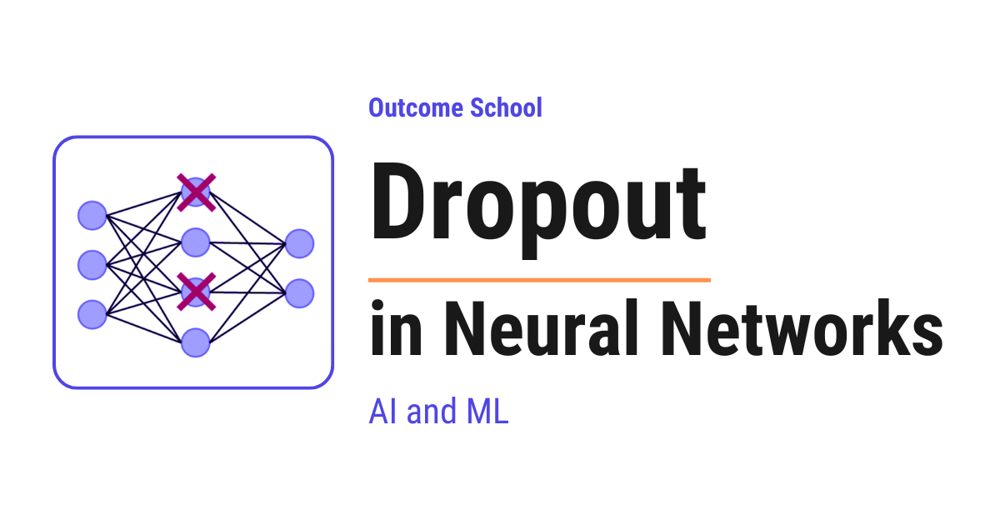
Dropout is a technique where we randomly switch off some neurons in a neural network during training, so that the network does not depend too much on any single neuron and does not overfit.
In this blog, we will learn about Dropout in Neural Networks. We will understand what it is, the problem it solves, how it works step by step with a simple example, and where it is used.
We will cover the following:
- What is Dropout?
- The problem of Overfitting
- Why do we need Dropout?
- How does Dropout work?
- A step-by-step example
- Dropout during training vs testing
- Dropout in code
- Variants of Dropout
- Advantages of Dropout
- Where Dropout is used
Let's get started.
What is Dropout?
Dropout is a technique where we randomly switch off some neurons in a neural network during training, so that the network does not depend too much on any single neuron.
Before we go deeper, let's understand one word - neuron.
A neural network is made of small units called neurons. Each neuron takes some numbers as input, does a small calculation, and passes a number forward to the next neurons. Many neurons connected together form a neural network. The network learns patterns from data using these neurons.
Now, the word "Dropout" simply means to remove something temporarily.
So, in simple words, during training, we randomly pick some neurons and switch them off for that moment. A switched-off neuron sends nothing forward, as if it does not exist for that one step.
We do this randomly again and again during training. So, every training step uses a slightly different version of the network.
Do not worry, we will understand exactly why we do this and how it helps.
The problem of Overfitting
The best way to learn this is by taking an example.
Suppose we are preparing a student for a math exam.
Let's say the student studies from only one practice book. The student reads the same book again and again. After some time, the student memorizes every single question and its answer from that book.
Now, in the practice book, the student scores 100 out of 100. The student looks perfect.
But, here is the catch. In the real exam, the questions are slightly different. And now the student fails, because the student only memorized the practice book and did not actually learn the concepts.
This problem is called Overfitting.
Overfitting happens when a model performs very well on the training data but performs poorly on new, unseen data.
In simple words, the model memorizes the training data instead of learning the general pattern.
A neural network with many neurons is very powerful. So, it can easily memorize the training data. This is exactly the student who memorizes the practice book.
So, now we have a clear problem. We need a way to stop the network from memorizing and force it to actually learn the general pattern.
Why do we need Dropout?
Now, let's understand the real reason behind Overfitting inside a neural network.
When we train a network normally, some neurons become very strong and the network starts depending heavily on them. These few neurons do most of the work, and the other neurons become lazy.
This is a problem. The network is now relying on a small group of neurons. This is called co-adaptation, which means a few neurons adapt together and start working as a fixed team. If this fixed team memorizes the training data, the whole network overfits.
So, how can we stop the network from relying on a fixed team of neurons? The answer is Dropout.
So, here comes Dropout to the rescue.
When we randomly switch off neurons during training, no neuron can be sure that its neighbors will be present. So, every neuron is forced to learn something useful on its own, instead of depending on a few strong neurons.
This breaks the fixed team. Every neuron must now pull its own weight. As a result, the network learns the general pattern instead of memorizing the training data.
This is how Dropout reduces Overfitting.
How does Dropout work?
Now, it's time to learn how Dropout actually works inside the network.
Dropout uses one important number called the dropout rate, written as p.
The dropout rate p is the probability that a neuron will be switched off during a training step.
For example, if p = 0.5, then every neuron has a 50% chance of being switched off in that step. If p = 0.2, then every neuron has a 20% chance of being switched off.
So, during each training step, the following happens.
Step 1: For every neuron in a Dropout layer, we flip a coin based on the dropout rate p. Based on this, we decide whether the neuron stays on or gets switched off.
Step 2: Every switched-off neuron outputs 0 for that step. It is as if the neuron is not there.
Step 3: The remaining neurons that stayed on pass their values forward as usual.
Step 4: The network learns from this thinner version of itself for that one step.
Step 5: In the next training step, we flip the coins again. So, a different random set of neurons gets switched off.
So, every training step trains a slightly different, thinner network. Over many steps, we are effectively training many different networks that all share the same weights.
Let's picture this with a small network as below:
Without Dropout (all neurons active)
Input Hidden Output
(o) ──────► (o) ─┐
├──────► (o)
(o) ──────► (o) ─┘
With Dropout (one neuron switched off)
Input Hidden Output
(o) ─┐
├──────► (o) ──────► (o)
(o) ─┘
(X)
Here, we can see how the signal flows from the input neurons to the hidden neurons, and then to the output neuron. To keep the picture clean, we draw one line per neuron, but in a fully connected network every input neuron actually connects to every hidden neuron, and every hidden neuron connects to the output. In the top network, "Without Dropout", every neuron is active. In the bottom network, "With Dropout", one hidden neuron is switched off, marked with (X). A switched-off neuron sends nothing forward and receives nothing, so all of its connections are removed for that one training step. The network is now thinner, and the remaining neuron must do the work on its own.
This is a very powerful idea. It is like training a huge team of smaller networks and then combining their strength into one final network.
Let's understand why this combining helps. Suppose we ask one person a tough question, the answer can be wrong. But if we ask many people and take the most common answer, the final answer is usually better. Dropout gives us this same benefit, because the final network behaves like many networks joined together.
A step-by-step example
Let's take a small example to make this concrete.
Suppose a layer has 4 neurons. After their calculation, their output values are as below:
Neuron 1: 2.0
Neuron 2: 4.0
Neuron 3: 6.0
Neuron 4: 8.0
Now, let's apply Dropout with a dropout rate p = 0.5. So, each neuron has a 50% chance of being switched off.
Suppose the random coin flips switch off Neuron 2 and Neuron 4. So, their outputs become 0.
Neuron 1: 2.0
Neuron 2: 0.0 (dropped)
Neuron 3: 6.0
Neuron 4: 0.0 (dropped)
Here, we can see that Neuron 2 and Neuron 4 are switched off. They send nothing forward. Only Neuron 1 and Neuron 3 are active for this step.
Now, there is one important detail. Since half the neurons are switched off, the total signal going forward has become smaller. We do not want the next layer to suddenly receive a weaker signal.
So, we scale up the values of the active neurons to balance this. We divide each active value by the keep probability, which is 1 - p. Here, 1 - p = 1 - 0.5 = 0.5.
So, we divide each active value by 0.5, which means we multiply it by 2.
Neuron 1: 2.0 / 0.5 = 4.0
Neuron 2: 0.0
Neuron 3: 6.0 / 0.5 = 12.0
Neuron 4: 0.0
Here, we can see that the active neurons are scaled up. This keeps the overall strength of the signal roughly the same as before.
This scaling trick is called inverted dropout, and this is the standard way Dropout is done today. The benefit is that we do all the adjustment during training, so we do not need to change anything during testing.
This is how Dropout works on a single layer for a single training step.
Dropout during training vs testing
Now, this is a very important point, so let's understand it carefully.
Dropout is only used during training. During testing, which means when we actually use the model to make predictions, we turn Dropout off.
Now, the question is: why do we turn it off during testing?
The answer is simple. During testing, we want the full power of the network. We want every neuron to participate so that we get a stable and reliable prediction. We do not want randomness in our final answer.
So, during testing, all neurons stay on. No neuron is switched off.
And because we already used inverted dropout during training, which scaled the values up, we do not need to do any extra adjustment during testing. The numbers already balance out.
Dropout is on during training and off during testing.
This is one of the most common mistakes beginners do. So, we must always remember to keep Dropout active only during training.
Dropout in code
The best way to understand this is by seeing it in code. Let's see how we add Dropout in a neural network using PyTorch as below:
import torch
import torch.nn as nn
model = nn.Sequential(
nn.Linear(784, 256),
nn.ReLU(),
nn.Dropout(p=0.5), # drop 50% of neurons
nn.Linear(256, 10)
)
Here, we can see what is happening.
nn.Linear(784, 256)is a normal layer with 256 neurons.nn.ReLU()is the activation that decides the output of the neurons.nn.Dropout(p=0.5)is the Dropout layer. It switches off 50% of the neurons during training.nn.Linear(256, 10)is the final layer that gives the output.
So, the Dropout layer simply sits between two layers and randomly switches off the neurons coming from the previous layer.
Now, there is one more important thing. We must tell PyTorch when we are training and when we are testing. We can do this as below:
model.train() # Dropout is active
# ... run training here ...
model.eval() # Dropout is turned off
# ... run testing here ...
Here, we can see that model.train() keeps Dropout active, and model.eval() turns Dropout off. This is exactly the training versus testing behavior we discussed above.
Variants of Dropout
Now, let's briefly learn about a few variants of Dropout. The basic idea stays the same, but each variant is designed for a different situation.
- Standard Dropout: This is the one we learned above. We randomly switch off individual neurons in a layer. This is used most of the time.
- Spatial Dropout: This is used in Convolutional Neural Networks, which are networks used for images. Instead of switching off individual neurons, it switches off an entire group of related neurons at a time. This works better for image data.
- DropConnect: Instead of switching off neurons, it randomly switches off the connections between neurons. So, the neurons stay, but some links between them are removed.
- Recurrent Dropout: This is used in Recurrent Neural Networks, which are networks used for sequences like text and speech. It applies Dropout in a careful way so that it does not damage the memory of the sequence.
Do not worry if these variants feel new. The most important one to understand is Standard Dropout, and we have already learned it well.
Advantages of Dropout
Now, let's list the main advantages of Dropout.
- Reduces overfitting: This is the main reason we use Dropout. It stops the network from memorizing the training data.
- No dependency on single neurons: Every neuron learns to be useful on its own, so the network does not rely on a fixed team of neurons.
- Acts like many models in one: Since every step trains a different thinner network, the final network behaves like a combination of many networks. This makes the predictions more robust.
- Very simple to use: We just add one Dropout layer. There is no complex math we need to write ourselves.
- Works with almost any network: We can use Dropout in many types of neural networks with very little effort.
That's the beauty of Dropout. It solves a big problem with a very simple idea.
Where Dropout is used
Now, let's see where Dropout is used.
- Image classification: Dropout is used in deep networks that classify images, to stop them from memorizing the training images.
- Natural Language Processing: Dropout is used in models that work with text, such as language models and translation models.
- Speech recognition: Dropout is used in models that convert speech into text.
- Almost every deep network: Whenever a network is large and has a risk of overfitting, Dropout is one of the first techniques we reach for.
One thing to remember is the choice of the dropout rate p. A common value is between 0.2 and 0.5. A very high value can switch off too many neurons and the network will not learn well. A very low value will not help much against overfitting. So, we pick the value based on our use case.
This was all about Dropout in Neural Networks.
Now we must have understood what Dropout is, the problem of overfitting it solves, how it works step by step, and where it is used.
Frequently Asked Questions
What dropout rate should we use?
A common value for the dropout rate p is between 0.2 and 0.5. A very high value can switch off too many neurons, and the network will not learn well. A very low value will not help much against overfitting. So we pick the value based on our use case.
Does a dropped neuron stay switched off for the rest of training?
No. A neuron is switched off only for that one training step. In the next step, we flip the coins again, so a different random set of neurons gets switched off. This way, every step trains a slightly different, thinner network that shares the same weights.
Do we need to scale the outputs during testing?
No. With inverted dropout, we scale up the active neurons during training by dividing by the keep probability 1 - p. Because all the adjustment happens during training, we do not need to change anything during testing. This is the standard way Dropout is done today.
What happens if we forget to call model.eval() in PyTorch?
Dropout stays active, so neurons keep getting switched off at random while we make predictions. During testing, we want every neuron to participate and we do not want randomness in our final answer. Calling model.eval() turns Dropout off, and forgetting it is one of the most common mistakes beginners make.
Is DropConnect the same as Dropout?
No. Dropout randomly switches off whole neurons. DropConnect keeps the neurons and instead randomly switches off the connections between them, so some links are removed. Both share the same basic idea of adding randomness during training.
Lesson 2.8
Batch Normalization vs Layer Normalization
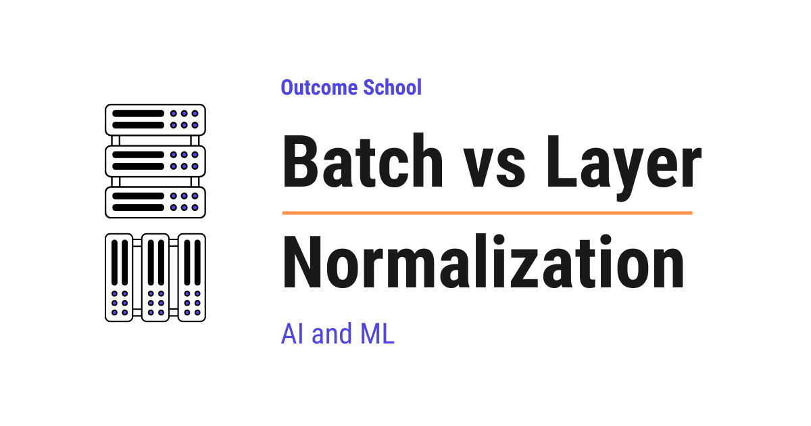
Batch Normalization normalizes each feature across all the examples in a batch, whereas Layer Normalization normalizes all the features within each single example.
In this blog, we are going to learn about Batch Normalization vs Layer Normalization. We will also see how Batch Normalization and Layer Normalization differ from each other and when to use which one.
We will cover the following:
- What is Normalization?
- Why do we need Normalization?
- What is Batch Normalization?
- What is Layer Normalization?
- Batch Normalization vs Layer Normalization
- When to use which one?
Let's get started.
What is Normalization?
In simple words, Normalization is the process of adjusting the values so that they are on a similar scale.
Let's say we have two features: age (0 to 100) and salary (0 to 10,00,000). The values of salary are much larger than the values of age. This creates problems while training a neural network because the network gives more importance to the feature with larger values.
So, here comes Normalization to the rescue. It brings all the values to a similar scale, typically with mean 0 and variance 1.
Why do we need Normalization?
When we train a deep neural network, the values flowing through the layers can become very large or very small. This causes the following issues:
- Training becomes slow.
- The model becomes unstable.
- Gradients can explode or vanish.
So, we must normalize the values flowing through the network. This is where Batch Normalization and Layer Normalization come into the picture.
Now, let's learn about Batch Normalization first.
What is Batch Normalization?
Batch Normalization is a technique that normalizes the values across the batch dimension for each feature.
In simple words, for each feature, it calculates the mean and variance across all the examples in the batch, and then normalizes the values using this mean and variance.
The best way to learn this is by taking an example.
Let's say we have a batch of 4 examples, and each example has 3 features as below:
Example 1: [10, 12, 14]
Example 2: [20, 22, 24]
Example 3: [30, 32, 34]
Example 4: [40, 42, 44]
Here, we have 4 rows (batch size = 4) and 3 columns (features = 3).
In Batch Normalization, we normalize column by column. Means, for the first feature, we take all 4 values from the first column [10, 20, 30, 40], calculate the mean and variance, and then normalize them.
- Mean of feature 1 = (10 + 20 + 30 + 40) / 4 = 25
- We do the same for feature 2 and feature 3.
So, Batch Normalization works across the batch. The mean and variance of each feature depend on the other examples present in the batch.
The formula is as below:
x_normalized = (x - mean) / sqrt(variance + epsilon)
Here, epsilon is a very small number added to avoid division by zero.
After normalization, we apply two learnable parameters gamma (scale) and beta (shift) as below:
output = gamma * x_normalized + beta
Here, gamma and beta allow the network to learn the best scale and shift for the normalized values.
Note: During training, we use the mean and variance of the current batch. During inference, we often process one example at a time, so we cannot calculate the batch mean and variance. So, we use the average of the mean and variance that we tracked across all the batches during training. This means, Batch Normalization behaves differently during training and inference.
Advantages:
- Faster training.
- Allows higher learning rates.
- Reduces the need for careful weight initialization.
- Acts as a regularizer.
Disadvantages:
- Does not work well with small batch sizes because the mean and variance of a very small batch are not reliable.
- Different behavior during training and inference, which can lead to inconsistent predictions.
- Not suitable for sequence models like Recurrent Neural Networks (RNNs) and Transformers because the sequence lengths vary from one example to another, and computing statistics across the batch becomes very difficult.
This was all about Batch Normalization. Now, it's time to learn about Layer Normalization.
What is Layer Normalization?
Layer Normalization is a technique that normalizes the values across the feature dimension for each example.
In simple words, for each example, it calculates the mean and variance across all the features of that example, and then normalizes the values using this mean and variance.
Let's take the same example as before:
Example 1: [10, 12, 14]
Example 2: [20, 22, 24]
Example 3: [30, 32, 34]
Example 4: [40, 42, 44]
In Layer Normalization, we normalize row by row. Means, for Example 1, we take all 3 values from the first row [10, 12, 14], calculate the mean and variance, and then normalize them.
- Mean of Example 1 = (10 + 12 + 14) / 3 = 12
- We do the same for Example 2, Example 3, and Example 4 independently.
So, Layer Normalization works across the features for each example, independently of the batch. The mean and variance of each example do not depend on the other examples present in the batch.
The formula is the same as Batch Normalization:
x_normalized = (x - mean) / sqrt(variance + epsilon)
output = gamma * x_normalized + beta
Here, the only difference is the dimension over which we calculate the mean and variance.
Note: Layer Normalization behaves the same way during training and inference, because it does not depend on the batch at all.
Advantages:
- Works with any batch size, even a batch size of 1.
- Same behavior during training and inference.
- Works very well for sequence models like RNNs and Transformers.
- Used in popular models like BERT, GPT, and other Large Language Models.
Disadvantages:
- Not always the best choice for Convolutional Neural Networks (CNNs), where Batch Normalization usually performs better.
Now that we have learned about both Batch Normalization and Layer Normalization, it's time to compare them side by side.
Batch Normalization vs Layer Normalization
For the sake of understanding, let's think of a classroom. Suppose we have 4 students and each student has scored marks in 3 subjects.
- Batch Normalization is like comparing the marks of a single subject across all 4 students. For example, we look at the Math marks of all 4 students together and normalize them.
- Layer Normalization is like comparing the marks of all 3 subjects for a single student. For example, we look at the Math, Science, and English marks of Student 1 together and normalize them.
This is the core difference between the two.
Let me tabulate the differences between Batch Normalization and Layer Normalization for your better understanding so that you can decide which one to use based on your use case.
| Aspect | Batch Normalization | Layer Normalization |
|---|---|---|
| Direction of normalization | Across the batch (column-wise) | Across the features (row-wise) |
| Depends on batch size | Yes | No |
| Behavior in training and inference | Different | Same |
| Works with batch size of 1 | No | Yes |
| Best for | CNNs and image data | RNNs, Transformers, and LLMs |
In simple words:
- Batch Normalization normalizes one feature across all examples in the batch.
- Layer Normalization normalizes all features of one example.
When to use which one?
The choice depends on our use case.
- If we are working with image data and Convolutional Neural Networks (CNNs) with large batch sizes, we must use Batch Normalization.
- If we are working with sequence data, Recurrent Neural Networks (RNNs), Transformers, or Large Language Models (LLMs), we must use Layer Normalization.
- If we have very small batch sizes, Layer Normalization is the better choice because it does not depend on the batch.
The reason Large Language Models like GPT and BERT use Layer Normalization is exactly this. The sequence lengths are different for different examples, and the batch sizes can be small. Layer Normalization handles both of these situations perfectly.
Now we must have understood Batch Normalization vs Layer Normalization.
Frequently Asked Questions
Why does Batch Normalization behave differently during inference?
During inference, we often process one example at a time, so we cannot calculate the batch mean and variance. Instead, we use the average of the mean and variance tracked across all the batches during training. This is why Batch Normalization behaves differently during training and inference, which can lead to inconsistent predictions.
What are gamma and beta in normalization?
Gamma and beta are two learnable parameters applied after normalization. Gamma scales the normalized values and beta shifts them. They allow the network to learn the best scale and shift for the normalized values, and both Batch Normalization and Layer Normalization use them.
Why do we add epsilon in the normalization formula?
We add epsilon to avoid division by zero. Epsilon is a very small number added to the variance before taking the square root. This keeps the formula safe even when the variance is zero.
Does Batch Normalization work with small batch sizes?
No. Batch Normalization does not work well with small batch sizes, because the mean and variance of a very small batch are not reliable. It does not work with a batch size of 1 at all. Layer Normalization is the better choice here, since it does not depend on the batch.
Lesson 2.9
What is RMSNorm? Root Mean Square Layer Normalization Explained
RMSNorm (Root Mean Square Normalization) is a simpler and faster version of Layer Normalization that keeps only the re-scaling step and drops the re-centering step. It powers most modern Large Language Models.
In this blog, we will learn about RMSNorm, a faster and simpler alternative to Layer Normalization that powers most modern Large Language Models like Llama, Mistral, Gemma, Qwen, PaLM, and DeepSeek.
Our goal is to decode RMSNorm so clearly that by the end, we will be able to explain how it works to anyone.
We will cover the following:
- Why normalization is needed in deep networks
- A quick recap of Layer Normalization (LayerNorm)
- What RMSNorm is and how it works
- The math behind RMSNorm with a concrete numeric example
- LayerNorm vs RMSNorm - the key differences
- Why modern LLMs prefer RMSNorm
- A code example
- Where RMSNorm fits in a Transformer
- Quick Summary
Let's get started.
The Big Picture
Before we go into the details, let's understand the big picture.
Neural networks like LLMs stack many layers on top of each other. As numbers flow through these layers, they can become very big or very small. This makes training slow and unstable.
To fix this, we scale the numbers at each layer to keep them in a healthy range. This scaling step is called normalization.
In simple words:
RMSNorm = A simpler and faster way to normalize numbers inside a neural network.
Instead of centering and scaling the numbers (like LayerNorm does), RMSNorm just scales them using their root mean square value. Same stabilizing effect, less work.
Why Do We Need Normalization?
Let's say we have a deep neural network with 100 layers. At each layer, numbers get multiplied by weights, added together, and passed through activation functions.
Here is the problem. After many layers, these numbers can:
- Become very large - during training, this causes the exploding gradient problem
- Become very small - during training, this causes the vanishing gradient problem
When this happens, the network becomes unstable. Training slows down. Sometimes it does not learn at all.
So, here comes normalization to the rescue. Normalization keeps the numbers at each layer in a stable, healthy range - not too big, not too small. This makes training faster and more stable.
A Quick Recap of Layer Normalization
Before jumping into RMSNorm, we must quickly recall how Layer Normalization (LayerNorm) works, because RMSNorm is a simplification of it.
LayerNorm takes a vector of numbers and does two things:
Step 1: Re-center. Subtract the mean so the numbers are centered around zero.
Step 2: Re-scale. Divide by the standard deviation so the numbers have a consistent spread.
Then it applies two learned parameters - gamma and beta - to allow the network to adjust the output if needed.
The formula is:
LayerNorm(x) = gamma * (x - mean) / sqrt(variance + eps) + beta
Here:
meanis the average of the values in the vectorvarianceis how spread out the values areepsis a tiny number to avoid division by zerogammaandbetaare learned parameters
LayerNorm works very well. It was used in the original Transformer paper. But there is one question researchers asked:
Do we really need both steps, re-centering and re-scaling? Or is one of them enough?
This question led to RMSNorm.
What Is RMSNorm?
RMSNorm (Root Mean Square Normalization) is a simpler version of LayerNorm that keeps only the re-scaling step and drops the re-centering step.
In simple words:
RMSNorm = LayerNorm with only the re-scaling step.
It was introduced in 2019 by Biao Zhang and Rico Sennrich in their paper "Root Mean Square Layer Normalization".
The key insight was this:
Most of the benefit of LayerNorm comes from the re-scaling step, not from the re-centering step.
So, if we skip the mean subtraction, we save computation without losing accuracy.
Here is a mental model that sticks:
LayerNorm controls both shift and scale. RMSNorm controls only scale - and that turns out to be enough.
Now, a natural question arises - if we do not re-center the values, how does the network handle mean shifts? The answer is that Transformers have residual connections and learned projections all over the place. These can absorb mean shifts on their own. So the network does not need normalization to do that job for it. The scale is the part that really needs a dedicated fix, which is why RMSNorm is enough in practice.
Let's see exactly how it works.
The Math Behind RMSNorm
RMSNorm uses the Root Mean Square (RMS) of the input vector to scale the values.
We do three things, in order:
Step 1: Square each value in the vector.
Step 2: Take the mean (average) of those squared values.
Step 3: Take the square root of that mean.
That is it. The result is the RMS value.
Intuitively, the RMS value tells us the typical magnitude of the numbers in the vector. A vector like [100, 200, 300] has a large RMS. A vector like [0.01, 0.02, 0.03] has a tiny RMS. By dividing each value by the RMS, we strip away the overall size and keep only the relative shape. That is exactly what we want from normalization.
The formula is:
RMS(x) = sqrt( (x1^2 + x2^2 + ... + xn^2) / n )
Where n is the number of values in the vector.
Once we have the RMS, the RMSNorm formula is:
RMSNorm(x) = gamma * x / RMS(x)
Here:
xis the input vectorRMS(x)is the root mean square of the vectorgammais a learned parameter (one per dimension)
Why do we need gamma at all? Because dividing by the RMS forces every vector to a fixed magnitude, which is too restrictive. gamma gives the network a knob to stretch or shrink each dimension back to whatever scale is actually useful for the task. So normalization stabilizes training, and gamma makes sure we do not lose expressiveness along the way.
In practice, we add a tiny number eps inside the square root to avoid division by zero:
RMSNorm(x) = gamma * x / sqrt( mean(x^2) + eps )
Notice there is no beta in RMSNorm. We do not need to shift the output because we never subtracted the mean in the first place.
Let's Put This Into Perspective With Real Numbers
Learning by example is the best way to learn.
Let's say we have an input vector with 4 values:
x = [2, 4, 4, 8]
Step 1: Square each value.
[2^2, 4^2, 4^2, 8^2] = [4, 16, 16, 64]
Step 2: Take the mean of the squares.
mean = (4 + 16 + 16 + 64) / 4 = 100 / 4 = 25
Step 3: Take the square root.
RMS(x) = sqrt(25) = 5
Step 4: Divide each input value by the RMS.
x / RMS(x) = [2/5, 4/5, 4/5, 8/5] = [0.4, 0.8, 0.8, 1.6]
Step 5: Multiply by gamma. For the sake of understanding, let's assume gamma is [1, 1, 1, 1].
RMSNorm(x) = [0.4, 0.8, 0.8, 1.6]
The numbers are now scaled to a healthy range. That is all RMSNorm does.
LayerNorm vs RMSNorm - The Key Differences
Let me tabulate the differences between LayerNorm and RMSNorm for your better understanding.
| LayerNorm | RMSNorm |
|---|---|
| Re-centers (subtracts mean) and re-scales (divides by std) | Only re-scales (divides by RMS) |
Has two learned parameters: gamma and beta |
Has one learned parameter: gamma |
| Slower - computes both mean and variance | Faster - only computes the RMS |
| Used in the original Transformer, BERT, GPT-2 | Used in Llama, Mistral, Gemma, Qwen, PaLM, DeepSeek |
To see the difference visually, here are the two pipelines side by side:
LayerNorm:
x --> [ subtract mean ] --> [ divide by std ] --> [ * gamma + beta ] --> output
RMSNorm:
x --> [ skipped ] --> [ divide by RMS ] --> [ * gamma ] --> output
^^^^^^^ ^^^^^^^
re-centering step no beta,
removed one parameter
Here, we can see that RMSNorm drops the mean subtraction step completely and also drops the beta parameter. Everything else follows the same idea as LayerNorm.
Why Modern LLMs Prefer RMSNorm
Now, a natural question arises - why do most modern LLMs use RMSNorm instead of LayerNorm?
The answer comes down to three reasons.
Reason 1: Speed. RMSNorm does less math than LayerNorm. It skips the mean subtraction and the variance calculation. On a small vector, this may not look like much. But LLMs have billions of parameters, trillions of tokens, and dozens to hundreds of normalization calls per forward pass (two per Transformer block, stacked across many blocks). A small saving per call adds up to a big saving overall. The original paper reported training time reductions of 7% to 64% depending on the model and task. Training becomes faster. Inference becomes faster.
Reason 2: Broadly the same accuracy. The original RMSNorm paper showed that models trained with RMSNorm reach the same accuracy as models trained with LayerNorm - sometimes slightly better, sometimes slightly worse, but broadly the same. We get the speed benefit without losing quality.
Reason 3: Simpler implementation. RMSNorm has fewer moving parts than LayerNorm. It is easier to implement and easier to reason about. With one less parameter (beta) and one less statistic to compute (the mean), the kernel is cleaner and easier to fuse efficiently on GPUs. This simplicity matters when we are training at the scale of trillions of tokens across thousands of GPUs.
This is why the modern LLM stack has almost completely switched to RMSNorm.
A Code Example
Let's see the code for RMSNorm as below:
import torch
import torch.nn as nn
class RMSNorm(nn.Module):
def __init__(self, dim, eps=1e-6):
super().__init__()
self.eps = eps
self.gamma = nn.Parameter(torch.ones(dim))
def forward(self, x):
# Square each value and take the mean along the last dimension
mean_square = x.pow(2).mean(dim=-1, keepdim=True)
# Take the square root to get RMS (eps added for stability)
rms = torch.sqrt(mean_square + self.eps)
# Scale the input: divide by RMS and multiply by gamma
return self.gamma * x / rms
Here, we can see that:
- We only have one learned parameter -
gamma. There is nobeta. - We compute the mean of the squared values along the last dimension.
- We take the square root of that mean to get the RMS.
- We divide the input by the RMS and multiply by
gamma.
That is the entire implementation. It is very simple.
Where RMSNorm Fits in a Transformer
In a modern LLM like Llama, RMSNorm is applied at two places inside each Transformer block:
- Before the attention block
- Before the feed-forward block
This style is called pre-norm, which means we normalize the input first, then pass it through the attention or feed-forward layer. Pre-norm helps training stability in very deep networks, which is why almost all modern LLMs use it.
Here is how one Transformer block looks with pre-norm RMSNorm:
input x
|
+----------+ <- residual path
| v
| [ RMSNorm ]
| |
| v
| [ Attention ]
| |
+--------> (+)
|
+----------+ <- residual path
| v
| [ RMSNorm ]
| |
| v
| [ FFN ]
| |
+--------> (+)
|
v
output
Here, we can see that each RMSNorm sits before the heavy layer (Attention or FFN), not after. The residual path skips around the whole block so the original input can flow through untouched.
One additional RMSNorm is also applied at the very end of the model, right before the final output projection. This last normalization keeps the hidden state in a stable range before it gets projected into logits.
We have a detailed blog on Transformer Architecture that explains where normalization fits in the overall flow.
Quick Summary
Let's recap what we have learned:
- Normalization keeps the numbers flowing through a deep network in a healthy range, which makes training faster and more stable.
- LayerNorm does two things - it re-centers the values (subtracts the mean) and re-scales them (divides by standard deviation).
- RMSNorm keeps only the re-scaling step. It divides the input by its Root Mean Square value.
- Root Mean Square is exactly what the name says - the square root of the mean of the squares.
- RMSNorm is faster than LayerNorm because it skips the mean subtraction and the variance calculation.
- Accuracy is broadly the same. The original paper showed RMSNorm matches LayerNorm on quality - sometimes slightly better, sometimes slightly worse. We get the speed benefit essentially for free.
- Modern LLMs like Llama, Mistral, Gemma, Qwen, PaLM, and DeepSeek all use RMSNorm.
- Only one learned parameter -
gamma. It has one value per dimension of the vector. There is nobetain RMSNorm.
We have learnt how RMSNorm works, why it is faster than LayerNorm, and why most modern LLMs have adopted it.
Frequently Asked Questions
Is RMSNorm less accurate than LayerNorm?
No. The original RMSNorm paper showed that models trained with RMSNorm reach broadly the same accuracy as models trained with LayerNorm, sometimes slightly better and sometimes slightly worse. So we get the speed benefit without losing quality.
How does a Transformer handle mean shifts if RMSNorm does not re-center?
Transformers have residual connections and learned projections all over the place, and these can absorb mean shifts on their own. So the network does not need normalization to do that job. The scale is the part that really needs a dedicated fix, which is why RMSNorm is enough in practice.
Why does RMSNorm not have a beta parameter?
RMSNorm does not need beta because it never subtracts the mean in the first place, so there is nothing to shift back. It keeps only one learned parameter, gamma, with one value per dimension. This lets the network stretch or shrink each dimension to a useful scale.
What is eps used for in RMSNorm?
The eps value is a tiny number added inside the square root to avoid division by zero. So the formula in practice becomes gamma * x / sqrt(mean(x^2) + eps). In the code example, eps defaults to 1e-6.
Who introduced RMSNorm?
RMSNorm was introduced in 2019 by Biao Zhang and Rico Sennrich in their paper "Root Mean Square Layer Normalization". Their key insight was that most of the benefit of LayerNorm comes from the re-scaling step, not from the re-centering step.
Lesson 2.10
What is a Recurrent Neural Network (RNN)?
A Recurrent Neural Network (RNN) is a type of neural network that remembers the context from the earlier inputs in a sequence, and uses that context to predict the right output. That is why it works well for sequences like text.
In this blog, we will learn about the Recurrent Neural Network.
Let's get started.
What is Recurrent Neural Network (RNN)?
As per Wikipedia, a recurrent neural network (RNN) is a class of artificial neural network where connections between units form a directed graph along a sequence. This allows it to exhibit dynamic temporal behavior for a time sequence. Unlike feedforward neural networks, RNNs can use their internal state (memory) to process sequences of inputs. This makes them applicable to tasks such as unsegmented, connected handwriting recognition or speech recognition.
Recurrent Neural Network comes into the picture when any model needs context to be able to provide the output based on the input.
Sometimes the context is the single most important thing for the model to predict the most appropriate output.
Let's understand this by an analogy. Suppose you are watching a movie, you keep watching the movie as at any point in time, you have the context because you have seen the movie until that point, then only you are able to relate everything correctly. It means that you remember everything that you have watched.
Similarly, RNN remembers everything. In other neural networks, all the inputs are independent of each other. But in RNN, all the inputs are related to each other. Let's say you have to predict the next word in a given sentence, in that case, the relation among all the previous words helps in predicting the better output. The RNN remembers all these relations while training itself.
In order to achieve it, the RNN creates the networks with loops in them, which allows it to persist the information.
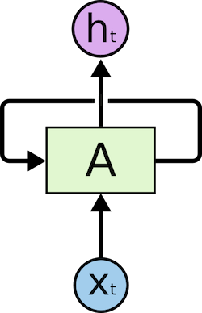
Image Source: colah's blog
This loop structure allows the neural network to take the sequence of input. If you see the unrolled version, you will understand it better.
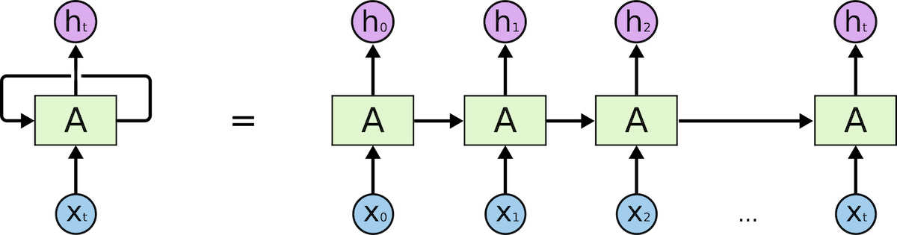
Image Source: colah's blog
As you can see in the unrolled version. First, it takes the x(0) from the sequence of input and then it outputs h(0) which together with x(1) is the input for the next step. So, the h(0) and x(1) is the input for the next step. Similarly, h(1) from the next is the input with x(2) for the next step and so on. This way, it keeps remembering the context while training.
This way the RNN works.RNN helps wherever we need the context from the previous input.
The following are the few applications of the RNN:
- Next word prediction.
- Music composition.
- Image captioning
- Speech recognition
- Time series anomaly detection
- Stock market prediction
Now a days, RNN has become very popular as it helps in solving many real-life problems which the industries are facing.
We have a blog on how RNNs and Transformers differ that explains why most modern language models use the Transformer instead, and another on the Evolution of LLM Architecture that covers the full journey from RNN to today's LLMs.
Frequently Asked Questions
How is an RNN different from a feedforward neural network?
Unlike feedforward neural networks, RNNs can use their internal state, which is their memory, to process sequences of inputs. In other neural networks, all the inputs are independent of each other. In an RNN, all the inputs are related to each other, so the model keeps the context from previous inputs.
Why does an RNN have loops in it?
The loops allow the network to persist information. At each step, the output from the previous step is fed in together with the next input. This way, the RNN keeps remembering the context while it processes the sequence.
What tasks are RNNs used for?
RNNs help wherever we need the context from the previous input. Common applications include next word prediction, music composition, image captioning, speech recognition, time series anomaly detection, and stock market prediction.
Do modern language models use RNNs?
Mostly no. Most modern language models use the Transformer instead of the RNN. The RNN is where the journey to today's LLM architectures started.
Lesson 2.11
How does PyTorch work?
PyTorch is a free and open-source library that helps us build and train machine learning models. It stores data in tensors, records every math step in a computation graph, and uses autograd to calculate the gradients for training.
In this blog, we will learn about how PyTorch works. We will also see what a tensor is, how the computation graph and autograd work together to train a model, and why PyTorch uses the GPU to become one of the most popular tools in the real world.
We will cover the following:
- What is PyTorch?
- What is a Tensor?
- The problem PyTorch solves
- What is a Computation Graph?
- What is Autograd?
- A complete training example
- What is the GPU and why does PyTorch use it?
- Why is PyTorch so popular?
Let's get started.
What is PyTorch?
PyTorch is a free and open-source library that helps us build and train machine learning models.
In simple words, PyTorch is a toolbox. It gives us ready-made tools so that we do not have to build everything from scratch.
Let's say we want to teach a computer to recognize a cat in a photo. We do not want to write thousands of lines of complex math by hand. PyTorch gives us those tools, so we can focus on our idea.
PyTorch was created by the team at Meta (the company behind Facebook). Today, it is one of the most used libraries in the world for building artificial intelligence.
PyTorch is written to be used with Python. Python is a programming language that is easy to read and write. That is one big reason why so many people love PyTorch.
Before we go deeper, we must understand the most important building block of PyTorch. It is called the Tensor.
What is a Tensor?
A Tensor is a container that holds numbers in an organized way.
In simple words, a Tensor is just a box of numbers arranged in rows and columns.
Let's understand this slowly, because everything in PyTorch is built on Tensors.
Consider a single number, like 5. That is the simplest form.
Now consider a list of numbers, like [1, 2, 3]. That is a row of numbers.
Now consider a grid of numbers, like a table with rows and columns. That is like a spreadsheet.
A Tensor is the general name for all of these. One number, a row of numbers, a grid of numbers, or even bigger arrangements. They are all Tensors.
Let's visualize this as below:
Single number Row of numbers Grid of numbers
(one value) (one line) (rows and columns)
+-----+ +---+---+---+ +---+---+---+
| 5 | | 1 | 2 | 3 | | 1 | 2 | 3 |
+-----+ +---+---+---+ +---+---+---+
| 4 | 5 | 6 |
+---+---+---+
| 7 | 8 | 9 |
+---+---+---+
<------------------- all of these are Tensors ------------------->
Here, we can see that a single number, a row of numbers, and a grid of numbers are all Tensors. They are just different sizes of the same idea, which is a container of numbers arranged in an organized way.
So, why do we need Tensors? Because computers understand numbers, not photos or words. A photo is just a grid of numbers, where each number is the brightness of a tiny dot. A piece of text is also turned into numbers. So, to teach a computer anything, we first turn it into numbers, and Tensors hold those numbers.
Let's create a Tensor in PyTorch as below:
import torch
# create a Tensor with three numbers
x = torch.tensor([1.0, 2.0, 3.0])
print(x)
It will print the following:
tensor([1., 2., 3.])
Here, we have imported torch, which is the PyTorch library. Then we used torch.tensor to create a Tensor that holds three numbers. PyTorch confirmed it by printing the Tensor back to us.
This is how we store data in PyTorch. Now, let's understand the actual problem that PyTorch is built to solve.
The problem PyTorch solves
Before jumping into the solution, we must understand the problem first.
The goal of machine learning is simple to say. We want the computer to learn a pattern from data, and that too without us writing the rule by hand.
Let's say we want the computer to learn the rule that converts a temperature in Celsius into Fahrenheit. We humans know the formula. But assume that we do not know it, and we want the computer to discover it from examples.
We give the computer some examples. When the input is 0, the answer is 32. When the input is 100, the answer is 212. We want the computer to figure out the rule on its own.
The computer starts with a random guess for the rule. The guess is wrong in the beginning. So, the computer checks how wrong it is, then slightly fixes the guess. It repeats this many times until the guess becomes very good.
This "check how wrong, then fix a little" loop is the heart of machine learning. But there is a hard part. To fix the guess correctly, the computer must know which direction to adjust each number, and by how much. This requires a lot of careful math called calculus.
Doing this math by hand for millions of numbers is impossible for us.
So, here comes PyTorch to the rescue. PyTorch does this hard math for us, automatically. To do that, PyTorch uses two powerful ideas. The first is the Computation Graph, and the second is Autograd. Let's understand both.
What is a Computation Graph?
A Computation Graph is a record of every math step that PyTorch performs, kept in the right order.
In simple words, while we do our calculations, PyTorch quietly writes down each step like a recipe.
Let's say we calculate the following. We take a number a, multiply it by b, and then add c. PyTorch does not just give us the final answer. It also remembers that we first multiplied, and then we added.
Why does it remember? Because later, when the computer wants to fix its guess, it needs to walk backward through these steps. To walk backward, it must first know the forward path. The Computation Graph is that path.
Let's see this with an example as below:
import torch
a = torch.tensor(2.0)
b = torch.tensor(3.0)
c = torch.tensor(4.0)
# PyTorch records each step
result = a * b + c
print(result)
It will print the following:
tensor(10.0)
We can picture the graph as below:
a (2) ----+
|
v
[ multiply ] ----> 6 ----+
^ |
| v
b (3) ----+ [ add ] ----> result (10)
^
|
c (4) ---------------------------+
Here, we can see that PyTorch first takes a and b into the multiply step to get 6, and then takes that 6 along with c into the add step to get the final result of 10. PyTorch records this whole path so that it can walk back through it later.
Here, we can see that PyTorch gave us the answer 10, because 2 multiplied by 3 is 6, and 6 plus 4 is 10. But behind the scenes, PyTorch also built a small graph. It noted that there was a multiply step, and then an add step.
The best part is that PyTorch builds this graph as we write normal code. We do not have to build the graph ourselves. PyTorch builds it line by line while our program runs.
This is how PyTorch keeps track of our calculations. Now, let's understand how it uses this graph to do the hard math for us.
What is Autograd?
Autograd is the part of PyTorch that automatically calculates how to adjust each number to reduce the error.
The word Autograd can be decomposed like below:
Autograd = Auto + Gradient
"Auto" means automatic. A "Gradient" is just a fancy word for direction and amount of change. So, Autograd means "automatic calculation of which direction to change and by how much".
Let's understand the idea of a gradient in simple words. Suppose we are standing on a hill in thick fog, and we want to reach the bottom. We cannot see far. So, we feel the ground under our feet to find which way it slopes downward, then take a small step in that direction. We repeat this until we reach the bottom.
A gradient is exactly that slope. It tells the computer which way is "downhill", where downhill means "less error". The computer takes a small step downhill, again and again, until the error is very small.
Autograd calculates this slope for every number in our model, automatically, using the Computation Graph we just learned about.
To turn on this tracking, we tell PyTorch that a Tensor needs gradients. We can write the code as below:
import torch
# tell PyTorch to track this number for gradients
x = torch.tensor(3.0, requires_grad=True)
# do a simple calculation
y = x * x
# ask PyTorch to calculate the gradient
y.backward()
print(x.grad)
It will print the following:
tensor(6.0)
Here, we have done a few things. First, we created a Tensor x with the value 3.0 and set requires_grad=True, which tells PyTorch to track it. Then we calculated y as x multiplied by x. After that, we called y.backward(), which tells PyTorch to walk backward through the graph and calculate the slope.
Finally, x.grad gave us the answer 6.0. For the calculation x * x, the slope at x = 3 is exactly 6. PyTorch found this for us automatically. We did not do any calculus by hand.
This is the real magic of PyTorch. We write the forward calculation in plain code, and PyTorch handles all the backward math.
This backward walk through the graph is exactly what backpropagation does. We have a detailed blog on the Math Behind Backpropagation that explains it step by step.
Now that we have learned about Tensors, the Computation Graph, and Autograd, it is time to put them together into a real training example.
A complete training example
Let's go back to our temperature problem. We want the computer to learn the rule that turns Celsius into Fahrenheit, only from examples.
The real rule is "multiply by 1.8 and add 32". But we will pretend we do not know it. We will let PyTorch discover the multiply number and the add number on its own.
Let's see the code for the full training loop as below:
import torch
# our examples: Celsius inputs and the correct Fahrenheit answers
celsius = torch.tensor([0.0, 100.0])
fahrenheit = torch.tensor([32.0, 212.0])
# start with random guesses, and track them for gradients
weight = torch.tensor(0.0, requires_grad=True)
bias = torch.tensor(0.0, requires_grad=True)
learning_rate = 0.0001
# repeat the learning loop many times
for step in range(100000):
# make a prediction with the current guess
prediction = weight * celsius + bias
# measure how wrong we are (the error)
error = ((prediction - fahrenheit) ** 2).mean()
# ask PyTorch to calculate the gradients
error.backward()
# take a small step downhill, then reset for the next round
with torch.no_grad():
weight -= learning_rate * weight.grad
bias -= learning_rate * bias.grad
weight.grad.zero_()
bias.grad.zero_()
print(weight, bias)
We can picture the learning loop as below:
+-------------------------------------------------+
| |
v |
make a prediction with the current weight and bias |
| |
v |
measure how wrong the prediction is (the error) |
| |
v |
error.backward() finds the slopes (gradients) |
| |
v |
nudge weight and bias a small step downhill |
| |
+------------------- repeat ----------------------+
Here, we can see that the loop keeps going round and round. Each round we predict, measure the error, find the slopes, and take a small step downhill. With every round the error gets smaller, until weight is near 1.8 and bias is near 32.
Here, we have done the complete learning cycle. Let me explain each part slowly.
- We created
celsiusandfahrenheitTensors. These are our examples, the input and the correct answer. - We created
weightandbiasas our guesses, starting at zero, and we setrequires_grad=Trueso PyTorch tracks them. - The
learning_rateis the size of each small step. A small step keeps the learning safe and steady. - Inside the loop,
predictionis the computer's current guess for the answer. - The
errormeasures how far the guess is from the correct answer. A bigger number means a worse guess. error.backward()tells PyTorch to calculate the gradients, which are the slopes forweightandbias.- Then we nudge
weightandbiasa little in the downhill direction, which reduces the error. - Finally, we reset the gradients with
zero_()so the next round starts fresh.
After the loop runs many times, the weight becomes close to 1.8 and the bias becomes close to 32. The computer discovered the rule on its own. We never told it the formula.
Note: We run the loop for a large number of times here, around 100000. The reason is that our Celsius inputs are not scaled, which means the numbers like 0 and 100 are very different in size. When the inputs are not scaled, the learning becomes slow, and the bias in particular takes many rounds to reach 32. In real projects, we usually scale the inputs first so that the model learns much faster. For this simple example, we keep it as it is and just run more rounds.
Let's also see the idea as a small step-by-step walkthrough for the very first rounds:
- Step 1: weight = 0, bias = 0, so the prediction is very wrong, and the error is huge.
- Step 2: PyTorch finds the slopes, and we nudge weight and bias a little. The error gets smaller.
- Step 3: We repeat. The prediction gets closer to the correct answer each time.
- Final step: weight is near 1.8, bias is near 32, and the error is very small.
This is how a machine learning model learns inside PyTorch. The same loop, with more numbers and more steps, is how huge models are trained too.
This was all about the training loop. Now, let's understand one more thing that makes PyTorch fast.
What is the GPU and why does PyTorch use it?
A GPU is a special chip in the computer that can do a huge number of simple math operations at the same time.
In simple words, the GPU is built for speed when we have a lot of small calculations.
Let's use an analogy. Suppose we have to deliver one thousand letters. A CPU is like one very fast person delivering them one after another. A GPU is like one thousand normal people, each delivering one letter at the same time. For this kind of work, the crowd finishes much faster.
Machine learning has millions of small math operations, mostly on Tensors. So, the GPU is perfect for it.
The beautiful thing about PyTorch is that moving our work to the GPU is very simple. We can write the code as below:
# move the Tensor to the GPU if one is available
device = "cuda" if torch.cuda.is_available() else "cpu"
x = torch.tensor([1.0, 2.0, 3.0]).to(device)
print(x)
Here, we have checked if a GPU is available. The word cuda is the name PyTorch uses for many GPUs. If a GPU is present, we move the Tensor to it using .to(device). If not, we stay on the cpu. The rest of our code stays the same.
We have a detailed blog on how CUDA Kernels work that explains what actually runs on the GPU behind the scenes.
This is how PyTorch makes our training fast without making our code complicated. It enables us to do complex things very simply. It provides us the power.
Now, we have understood the GPU. Let's finish with why PyTorch became so loved.
Why is PyTorch so popular?
We have already seen the main reasons, so let me put them together.
- PyTorch builds the Computation Graph as our code runs, line by line. This makes it easy to read, easy to test, and easy to fix when something goes wrong.
- Autograd does all the hard calculus for us, so we focus on our idea, not on the math.
- It works smoothly with Python, which is simple to learn and read.
- It uses the GPU with a single small change in the code, so our training becomes fast.
- It is free, open-source, and supported by a very large community, so help is always available.
These reasons together make PyTorch a favourite for students, researchers, and big companies alike.
Let's quickly map the main pieces to simple roles for better understanding:
| PyTorch piece | Simple role |
|---|---|
| Tensor | The box that holds our numbers |
| Computation Graph | The recipe that records every math step |
| Autograd | The helper that finds the downhill direction |
| GPU | The crowd that does the math fast |
Here, we can see the full picture. The Tensor holds the data. The Computation Graph remembers the steps. Autograd uses those steps to find how to improve. The GPU makes it all run fast.
Now, we have understood how PyTorch works. We started with Tensors, learned how PyTorch records our steps in a Computation Graph, saw how Autograd does the hard math automatically, ran a full training loop where the computer learned a rule on its own, and finally saw how the GPU makes everything fast.
Frequently Asked Questions
Do we need to build the computation graph ourselves in PyTorch?
No. PyTorch builds the computation graph as our code runs, line by line. We just write normal code for the forward calculation, and PyTorch quietly records each math step in the right order. This also makes the code easy to read, easy to test, and easy to fix.
Do we need a GPU to use PyTorch?
No. PyTorch works on the CPU too. A GPU only makes training faster, because it can do a huge number of simple math operations at the same time. We check if a GPU is available, move the Tensor to it with .to(device), and otherwise stay on the CPU, while the rest of the code stays the same.
What does requires_grad=True do in PyTorch?
It tells PyTorch to track a Tensor for gradients. When we later call backward() on a result, PyTorch walks backward through the computation graph and calculates the gradient for every tracked Tensor. We then read that gradient from the Tensor's grad value.
Why do we reset the gradients in every training round?
We reset the gradients with zero_() so that the next round starts fresh. In each round, we make a prediction, measure the error, calculate the gradients, and nudge the numbers a small step downhill. Resetting keeps each round working on its own new gradients.
Why can a simple PyTorch training loop need so many rounds?
One reason is that the inputs are not scaled. When input numbers like 0 and 100 are very different in size, learning becomes slow, and some values take many rounds to reach the right answer. In real projects, we usually scale the inputs first so that the model learns much faster.
Lesson 2.12
How Does The Machine Learning Library TensorFlow Work?
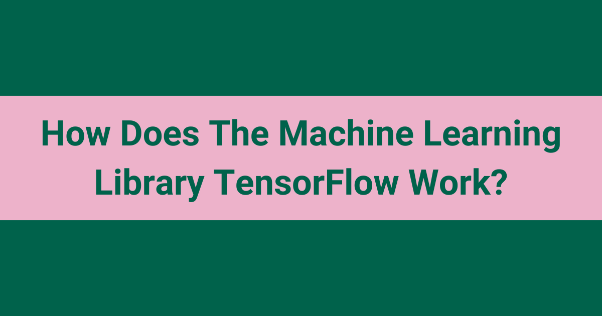
TensorFlow is an open-source machine learning framework. It works by letting us build a data flow graph, where each node is an operation, and then executing that graph on one or more CPUs or GPUs.
In this blog, we will learn how the Machine Learning library TensorFlow works.
Let's get started.
TensorFlow is an open-source machine learning framework for everyone. As I believe, when we know the internals of a library, we can get the most out of it. And we feel much more confident while working with that library. Today, TensorFlow is being used by the top companies like Google, Uber, Airbnb, Nvidia, Dropbox, etc.
Believe me, you can achieve anything out of it. It is mainly designed for deep neural network models.
TensorFlow supports the following:
- TensorFlow lets you deploy computation to one or more CPUs or GPUs in a desktop, server, or mobile device in a very simple way. This way the things can be done very fast.
- TensorFlow lets you express your computation as a data flow graph.
- TensorFlow lets you visualize the graph using the in-built tensorboard. You can inspect and debug the graph very easily.
- TensorFlow gives the best performance with an ability to iterate quickly, train models faster and run more experiments.
- TensorFlow runs on nearly everything: GPUs and CPUs - including mobile and embedded platforms (see TensorFlow Lite on Android) - and even tensor processing units (TPUs), which are specialized hardware to do the tensor math on.
PyTorch is another widely used library for the same kind of work. We have a blog on how PyTorch works that covers it in depth.
How does the TensorFlow flexible enough to support all the above features?
The architecture of the TensorFlow helps it supporting all the above and much more.
First of all, you must know that in TensorFlow, you build a graph in which you define the constants, variables, operations and then you execute it. The graph is a data structure which consists of all the constants, variables and operations that you want to do.
The node represents an operation.
The edges are carriers of data structures (tensors), where an output of one operation (from one node) becomes the input for another operation.
You do the things in TensorFlow library like below.
import tensorflow as tf
# Basic constant operations
# The value returned by the constructor represents the output
# of the Constant op.
a = tf.constant(2)
b = tf.constant(3)
# Launch the default graph.
with tf.Session() as sess:
print "a: %i" % sess.run(a), "b: %i" % sess.run(b)
print "Addition with constants: %i" % sess.run(a+b)
print "Multiplication with constants: %i" % sess.run(a*b)
# a=2, b=3
# Addition with constants: 5
# Multiplication with constants: 6
# Basic Operations with variable as graph input
# The value returned by the constructor represents the output
# of the Variable op. (define as input when running session)
# tf Graph input
a = tf.placeholder(tf.int16)
b = tf.placeholder(tf.int16)
# Define some operations
add = tf.add(a, b)
mul = tf.multiply(a, b)
# Launch the default graph.
with tf.Session() as sess:
# Run every operation with variable input
print "Addition with variables: %i" % sess.run(add, feed_dict={a: 2, b: 3})
print "Multiplication with variables: %i" % sess.run(mul, feed_dict={a: 2, b: 3})
# Addition with variables: 5
# Multiplication with variables: 6
Let’s see it by building a mini TensorFlow. We will try to build a small library just for understanding how the TensorFlow works.
Create a class for the operations called TFOperation.
class TFOperation():
def __init__(self, input_nodes=[]):
self.input_nodes = input_nodes
self.output_nodes = []
for node in input_nodes:
node.output_nodes.append(self)
_default_graph.operations.append(self)
def compute(self):
pass
Then, extend TFOperation class to make add class.
class add(TFOperation, object):
def __init__(self,x,y):
super(add, self).__init__([x,y])
def compute(self, x_var, y_var):
self.inputs = [x_var, y_var]
return x_var + y_var
Similarly, we can extend the TFOperation to make multiply class.
class multiply(TFOperation, object):
def __init__(self,x,y):
super(multiply, self).__init__([x,y])
def compute(self, x_var, y_var):
self.inputs = [x_var, y_var]
return x_var * y_var
Now, create the Placeholder class for the variables.
class Placeholder():
def __init__(self):
self.output_nodes = []
_default_graph.placeholders.append(self)
Now, create the Constant class.
class Constant():
def __init__(self, initial_value=None):
self.value = initial_value
self.output_nodes = []
_default_graph.variables.append(self)
Then, we will create the Graph class.
class Graph():
def __init__(self):
self.operations = []
self.placeholders = []
self.variables = []
def set_as_default(self):
global _default_graph
_default_graph = self
Now, let's make the utility function traverse_postorder so that the operations happen in the correct order.
def traverse_postorder(operation):
nodes_postorder = []
def recurse(node):
if isinstance(node, TFOperation):
for input_node in node.input_nodes:
recurse(input_node)
nodes_postorder.append(node)
recurse(operation)
return nodes_postorder
Finally create the Session class.
import numpy as np
class Session():
def run(self, operation, feed_dict={}):
nodes_postorder = traverse_postorder(operation)
for node in nodes_postorder:
if isinstance(node, Placeholder):
node.output = feed_dict[node]
elif isinstance(node, Constant):
node.output = node.value
else:
# OPERATION
node.inputs = [input_node.output for input_node in node.input_nodes]
node.output = node.compute(*node.inputs)
if type(node.output) == list:
node.output = np.array(node.output)
return operation.output
So, our mini TensorFlow library is ready.
Let’s do some operations with constants and placeholder(variables).
We will do the following operations with our mini TensorFlow library.
y = mx + c
m = 10
c = 1
y = 10x + 1
# Create the Graph
g = Graph()
# Set the graph as default
g.set_as_default()
# Create a constant
m = Constant(10)
# Create an another constant
c = Constant(1)
# Create a variable using Placeholder
x = Placeholder()
# Create add and multiply operation
y = add(multiply(m,x), c)
# Create the session
sess = Session()
# Run the session to get the result
result = sess.run(operation=y, feed_dict={x:10})
# Print the result
print(result)
So, this is how the TensorFlow works.
Frequently Asked Questions
What is a graph in TensorFlow?
A graph is a data structure that holds all the constants, variables, and operations that we want to run. Each node represents an operation. The edges carry tensors, where the output of one node becomes the input for another node.
Can TensorFlow run on mobile devices?
Yes. TensorFlow lets us deploy computation to one or more CPUs or GPUs in a desktop, server, or mobile device. It runs on nearly everything, including mobile and embedded platforms, and even on tensor processing units (TPUs).
What is the difference between a Placeholder and a Constant in TensorFlow?
A Constant holds a fixed value that we give it when we create it. A Placeholder is used for a variable input, and it gets its value only when we run the session, through the feed_dict.
Why are the operations traversed in postorder before running them?
Postorder traversal makes the operations happen in the correct order. It visits all the input nodes of an operation before the operation itself. So, when the session computes a node, the outputs of its inputs are already ready.